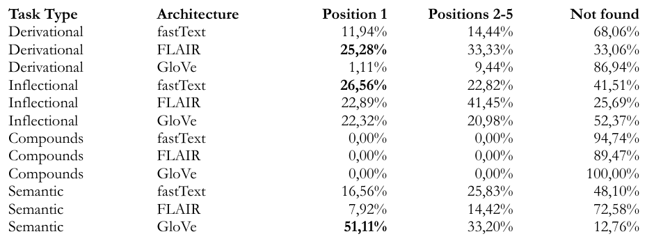
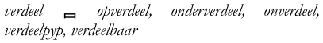
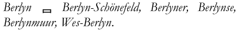
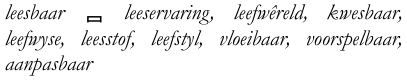
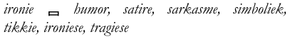

RAIL 2022Traduction automatique
Explorant les embeddings de mots en afrikaans avec des analogies et des voisins les plus proches
Traduction automatique, non relue par un humain. L'article original est la version de référence ; les phrases soulignées sont celles dont les contrôles automatiques n'étaient pas sûrs.
Proceedings of the 3rd Workshop on Resources for African Indigenous Languages (RAIL 2022), Journal of the Digital Humanities Association of Southern Africa.
Traduction par Ernst van Gassen (Arktos AI Lab), sous licence CC BY-SA 4.0 comme l'original. Réutilisation permise avec attribution ; partage des adaptations dans les mêmes conditions. Les auteurs originaux n'ont pas relu ni approuvé cette traduction.
Texte brut réutilisable, avec sa licence : Français · LICENCE
Affiliations
Gaustad, Tanja
Eiselen, Roald
Centre for Text Technology (CTexT), North-West
University, South Africa
Adresses e-mail retirées pour la protection de la vie privée. Elles figurent dans le PDF original.
Résumé
Cet article présente une exploration des embeddings de mots pour l'afrikaans en utilisant les méthodologies des analogies et des voisins les plus proches. Nous comparons les résultats sur trois types d'embeddings (fastText, FLAIR et GloVe) sur un nouveau jeu de données d'analogies pour l'afrikaans, inspiré du Bigger Analogy Test Set: BATS (Gladkova et al. 2016). Notre analyse montre que pour l'afrikaans, de manière similaire à l'anglais, les types d'embeddings influencent la qualité des analogies trouvées pour différentes tâches linguistiques. Notre investigation démontre également, cependant, que ces embeddings de l'afrikaans n'encodent pas une représentation linguistique aussi claire que celle des embeddings de l'anglais. La raison exacte de cela est sujette à des travaux futurs, mais la complexité morphologique ajoutée et le manque de données jouent probablement un rôle.
Mots-clés
Embeddings de texte, Afrikaans, Analogies, Évaluation, Langues à ressources limitées
1 Introduction et contexte
Au cours de la dernière décennie, il y a eu un changement fondamental dans le domaine du traitement du langage naturel (NLP) avec l'adoption généralisée des réseaux de neurones profonds (DNN), conduisant à des avancées majeures dans le domaine. À la base de ce changement, il y a eu l'introduction de méthodes plus sophistiquées pour représenter les données linguistiques sous forme numérique, spécifiquement des représentations vectorielles à valeurs réelles connues sous le nom d'embeddings de mots. Ces représentations sont un prérequis pour appliquer les techniques d'apprentissage profond à diverses technologies de TAL. En même temps, ces embeddings ont éliminé une partie importante de la linguistique qui faisait partie du cycle de développement du TAL (même avec les techniques traditionnelles d'apprentissage automatique) et ont abouti à une poursuite désormais presque entièrement axée sur l'ingénierie et les performances de pointe.
L'une des caractéristiques de ces représentations plus complexes est qu'il n'y a pas de lien clair interprétable par l'homme entre les représentations vectorisées et les connaissances linguistiques existantes. Cela rend à son tour les composants d'apprentissage automatique, qui sont déjà très complexes et difficiles à interpréter, presque impossibles à comprendre pleinement. Néanmoins, les développeurs ont formulé de vastes affirmations sur l'information linguistique représentée dans ces plongements, tant aux niveaux morphologique, syntaxique que sémantique (Mikolov et al. 2013a, Pennington et al. 2014). Pour soutenir ces affirmations, différents tests ont été conçus dans le but d'expliquer indirectement les informations qui sont contenues dans les représentations vectorielles, principalement pour l'anglais. Plus récemment, il y a également eu des investigations plus motivées linguistiquement pour tenter de mieux comprendre l'information codée dans ces embeddings et s'il existe des corrélations avec des concepts et des connaissances linguistiques existants (Allen & Hospedales 2019, Miaschi & Dell'Orletta 2020, Warstadt et al. 2019).
Pour l'afrikaans, il y a eu un nombre limité d'études sur l'utilisation de l'apprentissage profond et des plongements lexicaux (Hanslo 2021, Heyns & Barnard 2020, Loubser & Puttkammer 2020, Ralethe 2020, Van Heerden & Bas 2021), se concentrant principalement sur l'application de l'apprentissage profond à diverses tâches de TAL. Jusqu'à récemment, il n'y avait que trois modèles d'embedding de mots afrikaans librement disponibles (Conneau et al. 2020, Grave et al. 2018), tous sans aucune évaluation directe de leur qualité. Plus récemment, Eiselen (2022) a publié cinq nouveaux modèles d'embedding pour l'afrikaans (librement disponibles à partir de [1]), entraînés sur un ensemble de données plus grand et curaté, dont trois seront utilisés dans cette étude.
À notre connaissance, il n'y a pas eu d'étude approfondie de la nature des plongements lexicaux pour l'afrikaans, ni de vérification que les tests et les affirmations faits pour les plongements anglais valent pour une langue comme l'afrikaans, qui est morphologiquement plus complexe à la fois en termes de dérivation et de flexion, mais aussi très productive en termes de composition, contrairement à l'anglais. L'afrikaans dispose également de nettement moins de données pour entraîner ces modèles de plongement.
Avec ce contexte à l'esprit, notre étude vise une investigation exploratoire des embeddings de mots en afrikaans pour trois architectures différentes (GloVe, fastText et FLAIR), en appliquant des techniques d'évaluation existantes pour répondre aux questions suivantes :
- Différents modèles de plongement encodent-ils différents types d'informations pour des langues morphologiquement plus complexes et moins dotées en ressources, comme l'afrikaans ?
- Les méthodes d'évaluation intrinsèque pour l'anglais sont-elles applicables à des langues plus complexes sur le plan morphologique, telles que l'afrikaans?
La section suivante fournit un bref aperçu des embeddings de mots, des trois architectures envisagées et des données d'entraînement utilisées. La section 3 donne un aperçu des techniques d'analyse des embeddings de mots et de la conception expérimentale pour l'afrikaans, suivie d'une analyse des résultats des différentes expériences dans la section 4. Nous concluons l'enquête à la section 5 avec une discussion plus approfondie de nos conclusions et des domaines de travail futur possibles.
2 Architectures de plongement et procédures d'entraînement
Trouver des représentations numériques significatives pour le texte, et en particulier pour les mots, a une longue histoire en TAL (Pennington et al. 2014). C'est particulièrement vrai dans le contexte de l'apprentissage automatique où ces représentations sont une condition préalable pour que les modèles puissent être entraînés. Bien que les travaux sur l'apprentissage de ces types de représentations aient été en cours depuis Bengio et al. (2003), l'approche prédominante pour représenter les mots dans les modèles d'apprentissage automatique était les soi-disant vecteurs one hot, où chaque mot d'un vocabulaire est représenté par un vecteur creux contenant des zéros pour toutes les positions sauf celle du mot particulier, qui est définie à 1. Cette méthode était utilisable, mais n'incluait que des informations indiquant si le mot est un membre du vocabulaire ou non. Cela a changé en 2013 avec l'introduction de word2vec (Mikolov et al. 2013a, Mikolov et al. 2013b, Mikolov et al. 2013c), où les vecteurs à valeur réelle sont appris par une combinaison de cooccurrences au niveau de la phrase et d'un classificateur log-linéaire pour générer un vecteur de sortie de longueur prédéfinie. Cela a été suivi peu après par une autre technique de plongement, Global Vectors (GloVe) (Pennington et al. 2014). Les deux méthodes ont permis un apprentissage efficace sur de grandes quantités de données et les représentations vectorielles apprises ont entraîné des améliorations dans de nombreuses technologies NLP en aval lorsqu'elles étaient combinées avec diverses techniques d'apprentissage profond.
L'une des principales limites de ces modèles de plongement « classiques » est que chaque mot possède un seul plongement, indépendamment du contexte dans lequel le mot apparaît. Ce problème a été résolu par des modèles de plongement et de langage plus récents qui exploitent différentes architectures de DNN, telles que les réseaux de neurones artificiels convolutionnels, récurrents et transformeurs. Ces modèles apprennent un modèle pour générer une sortie vectorielle, qui peut adapter la représentation vectorielle pour un mot en prenant en compte le contexte dans lequel le mot apparaît. Cela a permis des gains majeurs dans les tâches de traitement automatique du langage naturel en aval, au détriment d'au moins un aspect très important, à savoir l'explicabilité.
Dès le début du développement des embeddings, il était clair que bien que les représentations vectorielles soient en corrélation avec plusieurs attributs sémantiques et morpho-syntaxiques de l'anglais, il était difficile de déterminer ce que le modèle apprend. La nature des embeddings - de grands vecteurs de nombres à valeurs réelles - et leurs procédures d'entraînement obscurcissent la signification d'une valeur particulière dans une position particulière du vecteur et la manière dont les valeurs corrèlent avec les attributs linguistiques. Cela est devenu encore pire avec l'utilisation des DNN pour générer les représentations, car il y a tellement de variables dans le processus, qu'il devient presque impossible de déterminer s'il existe des attributs linguistiques spécifiques associés à des positions ou des régions vectorielles spécifiques. Bien qu'il y ait eu plusieurs efforts pour proposer des méthodes d'investigation des embeddings, il n'existe toujours pas de méthodologie claire pour investiguer la qualité des embeddings et expliquer les valeurs associées aux modèles. De plus, la plupart de ces investigations se sont concentrées exclusivement sur l'anglais, et peu de travaux ont été réalisés pour déterminer comment les représentations se comportent dans des environnements linguistiquement différents et/ou moins dotés en ressources. Pour cette étude, nous nous concentrons sur trois architectures de plongement, deux des plongements classiques les plus courants et un réseau de neurones artificiels récurrent, à savoir les plongements fastText, GloVe et FLAIR.
fastText (Bojanowski et al. 2017) est une extension du word2vec original (Mikolov et al. 2013a) qui inclut des n-grammes de caractères dans les calculs de plongement afin de garantir que les mots jamais vus auparavant génèrent également des plongements. Les plongements GloVe (Pennington et al. 2014) diffèrent légèrement de fastText en ce qu'ils utilisent les cooccurrences globales des mots pour entraîner un modèle de régression log-bilinéaire destiné à générer les plongements, et ne considèrent que les mots. Ces deux modèles génèrent un seul embedding pour un mot, indépendamment du contexte du mot. Les embeddings FLAIR, quant à eux, entraînent un réseau de neurones récurrents à mémoire longue et courte pour générer une représentation basée sur une séquence de caractères. Cela présente deux avantages : i) le même mot dans différents contextes peut avoir différentes représentations reflétant le contexte ; et ii) parce que le modèle considère les caractères, et non les mots, comme unités de base, toute séquence de caractères obtiendra un plongement, qu'elle ait été vue ou non pendant l'entraînement. Cette dernière caractéristique est particulièrement utile dans les environnements moins dotés en ressources, où la parcimonie des données demeure un problème majeur. fastText et FLAIR ont chacun deux variantes, mais en raison de contraintes d'espace, nous nous concentrerons uniquement sur les modèles fastText à sac de mots continu (CBoW) et FLAIR rétrograde dans notre analyse.
La condition préalable essentielle pour entraîner tout type de plongement est une grande collection de données textuelles, généralement de l'ordre de milliards de mots. Malheureusement, aucune telle grande collection de données n'existe pour l'afrikaans. Aux fins de cette étude, nous avons utilisé une combinaison de données librement disponibles, y compris les corpus de textes en afrikaans du NCHLT (Eiselen & Puttkammer 2014), les données de textes monolingues en afrikaans d’Autshumato (Snyman et al., 2013) et Wikipédia [2], ainsi que des ensembles de données internes dont l’accès est restreint en raison des droits d’auteur. Au total, les modèles ont été entraînés sur environ 250 millions de mots, ce qui est bien moins de données que ce qui est généralement utilisé pour l'apprentissage de plongements pour la plupart des langues bien dotées du monde.
Puisque l'étude actuelle s'intéresse principalement à l'exploration des caractéristiques des représentations vectorielles, les paramètres par défaut ont été utilisés pour l'entraînement de chacune des embeddings.
3 Techniques d'analyse pour les embeddings de mots : Conception expérimentale pour l'afrikaans
Comme mentionné ci-dessus, une évaluation purement intrinsèque des embeddings de mots reste insaisissable car les vecteurs contiennent de grandes quantités de valeurs numériques qui ne correspondent pas clairement à des caractéristiques linguistiques spécifiques et sont donc difficilement interprétables par les humains. Les embeddings de mots sont généralement évalués lorsqu'ils sont utilisés comme entrée d'un système plus large qui montre alors une performance améliorée. Avec ce type d'évaluation extrinsèque, il est cependant difficile d'évaluer la contribution des embeddings à la performance globale par rapport à, par exemple, l'architecture du système (Schnabel et al. 2015). Nous allons maintenant discuter de la manière dont nous avons utilisé des techniques d'analyse existantes pour évaluer et explorer les embeddings de l'afrikaans.
3.1 Analogies
Diverses tentatives ont été faites pour étudier comment les embeddings de différents mots sont corrélés et pour montrer qu'ils représentent un certain attribut linguistique (Allen & Hospedales 2019, Miaschi & Dell'Orletta 2020, Tulkens et al. 2016, Warstadt et al. 2019). Une telle technique consiste à utiliser des données basées sur des analogies pour tester l'identification des relations linguistiques à l'aide des embeddings de mots (Mikolov et al. 2013a, Turney 2012). L'analogie la plus citée est sans aucun doute « Quel mot est à roi ce que femme est à homme ? » avec la réponse attendue « reine ».
Mikolov et al. (2013a) ont introduit l'ensemble de test d'analogie de Google pour l'anglais, qui contient neuf catégories morpho-syntaxiques et cinq catégories sémantiques. Les tâches sémantiques sont toutes encyclopédiques tandis que les catégories morpho-syntaxiques incluent deux tâches sur la morphologie dérivationnelle, six sur la morphologie flexionnelle et une tâche encyclopédique, avec entre 20 et 70 paires de mots uniques chacune. Comme l'ont souligné Gladkova et al. (2016), il existe deux problèmes avec les ensembles de tests existants : premièrement, la plupart d'entre eux ne sont pas équilibrés pour les différents types de relations linguistiques et deuxièmement, les résultats sont généralement rapportés comme une moyenne sur l'ensemble du test et non par type de relation. Pour remédier au premier défaut, ils ont introduit le Bigger Analogy Test Set (BATS) couvrant quatre types principaux de relations linguistiques : la morphologie flexionnelle et dérivationnelle ainsi que la sémantique lexicographique et encyclopédique. Chaque type principal contient à son tour 10 relations différentes avec 50 paires de mots uniques chacune.
À ce jour, il y a eu peu d'études sur les embeddings pour les langues d'Afrique du Sud (Dlamini et al. 2021), et aucun ensemble de tests d'analogies de ce type n'existe pour l'afrikaans spécifiquement. Pour cette première exploration des embeddings de mots en afrikaans, BATS a servi d'inspiration pour créer un petit ensemble d'analogies. Nous n'avons pas inclus de tâches sémantiques lexicographiques à ce stade, mais nous avons décidé de nous concentrer sur la morphologie flexionnelle et dérivationnelle ainsi que sur deux tâches sémantiques encyclopédiques pour la comparaison avec l'anglais.
La première étape a été une analyse minutieuse des catégories utilisées : étant basées sur l’anglais, elles ne sont pas toutes applicables à une langue différente. Par exemple, l'une des tâches de morphologie flexionnelle dans BATS, la formation du pluriel des verbes, n'est pas présente en afrikaans. De plus, pour les catégories applicables, une simple traduction n'est généralement pas une option viable en raison des différences d'utilisation, de fréquences et de formations des mots en afrikaans. Pour chaque catégorie couverte dans notre étude, nous avons essayé d'obtenir un échantillon représentatif d'autant d'aspects de la catégorie que possible. Pour les noms pluriels par exemple, un nombre substantiel de différentes classes de pluriels réguliers et irréguliers trouvés dans les manuels et les grammaires ont été inclus. Il en va de même pour les adjectifs comparatifs et superlatifs. Un aspect linguistique qui a eu une investigation limitée dans ce type de tests, mais qui est très répandu en afrikaans, est la composition. Par conséquent, un ensemble très petit de composés nominaux a été inclus pour déterminer comment ils sont représentés dans les embeddings.
Notre ensemble de test pour l'afrikaans comprend deux tâches sémantiques, toutes deux encyclopédiques, et 11 tâches morpho-syntaxiques, trois dérivationnelles, sept flexionnelles ainsi que la composition. Au total, il y a 16 313 "questions" d'analogie. Le tableau 1 donne un aperçu des catégories choisies, y compris le nombre de paires de mots par tâche et un exemple pour chacune.
Les réponses aux questions d'analogie sont calculées en prenant la représentation vectorielle du mot 1 (Vw1), en soustrayant le vecteur du mot 2 (Vw2), lié soit sémantiquement soit morpho-syntaxiquement, puis en ajoutant le vecteur d'un troisième mot (Vw3). Le vecteur résultant (Vresult) est ensuite comparé aux vecteurs de tous les mots du modèle pour trouver le(s) vecteur(s) avec la plus petite distance euclidienne. L'attente est que le vecteur le plus proche du vecteur résultat exprimera la même relation avec W3 que la relation entre W1 et W2. L'exemple prototypique, Vking - Vman + Vwoman devrait résulter en un vecteur qui a la plus petite distance à Vqueen. De même, Vstronger - Vstrong + Vclear devrait donner un vecteur le plus proche de Vclearer. La visualisation vectorielle dans la Figure 1 donne une intuition de la raison pour laquelle cela devrait fonctionner. Les décalages entre homme et femme, et roi et reine, bien que non exactement les mêmes, sont similaires. Par conséquent, en supprimant les caractéristiques masculines du roi et en ajoutant les caractéristiques féminines, on devrait obtenir un vecteur proche de la reine.
Tableau 1: Ensemble de données d'analogie pour l'afrikaans: Types de relations linguistiques, nombre de paires de mots uniques et exemples.

3.2 Voisins les plus proches
Une deuxième méthode décrite par Collobert & Weston (2008) et également référencée par Mikolov et al. (2013a) est l'analyse des voisins les plus proches pour un ensemble de mots spécifique. Le voisin le plus proche d'un mot est à nouveau déterminé en trouvant les vecteurs de mots qui présentent la plus petite distance euclidienne entre le vecteur de la requête et les vecteurs de tous les autres mots pour lesquels des plongements existent dans le modèle. L'hypothèse est qu'une revue qualitative des voisins fournit des informations supplémentaires sur les types de relations que les embeddings apprennent. À titre d'exemple, le plongement anglais fastText pour le mot « run » inclut « runs, running, ran », ce qui indique l'encodage de certaines propriétés morpho-syntaxiques. Bien qu'il ne soit pas possible de créer une seule métrique à des fins d'évaluation, il s'agit d'une procédure utile pour comprendre les informations sous-jacentes qui sont encodées dans les embeddings, telles que l'hyperonymie, l'hyponymie, la synonymie ou les relations morpho-syntaxiques.
L'une des mises en garde à garder à l'esprit avec l'analyse du plus proche voisin est que différents types de relations peuvent être trouvés au sein d'une même architecture de plongement, et il n'est pas toujours immédiatement évident de savoir quelle information est encodée dans les plongements. Des modèles cohérents peuvent être trouvés, mais ne devraient être utilisés que pour tirer des conclusions très larges et générales sur l'information codée.

Figure 1 : Représentation vectorielle liée au genre (d'après Pennington et al. (2014))
Pour étudier l'information encodée dans les différentes architectures de plongement pour l'afrikaans, nous avons sélectionné deux mots de chaque catégorie listée dans le Tableau 1, soit 26 au total, et généré les cinq voisins les plus proches pour chaque mot dans chacune des différentes architectures. Ceux-ci ont ensuite été examinés manuellement pour déterminer la qualité et la nature des plongements.
3.3 Évaluation des tâches en aval
La méthode la plus courante pour valider la qualité des plongements lexicaux est leur application dans le cadre d'une tâche en aval, telle que l'étiquetage POS, la reconnaissance d'entités nommées ou les systèmes de questions-réponses. L'utilisation de plongements plutôt que d'un encodage one-hot a été l'une des premières étapes permettant la tendance actuelle de l'apprentissage profond en TAL, et il a été constamment démontré que l'utilisation de plongements dans les tâches en aval améliore la qualité de la technologie. Il a également été démontré que cela est le cas pour l'afrikaans où une combinaison d'embeddings FLAIR améliore à la fois les résultats d'étiquetage morpho-syntaxique et de reconnaissance d'entités nommées par rapport aux modèles précédents (Eiselen 2022). En raison des contraintes d'espace, nous n'incluons pas ces résultats dans l'analyse actuelle.
4 Analyse des embeddings de mots en afrikaans : Résultats
L'une de nos motivations initiales pour cette recherche était d'examiner si le type d'information encodé dans différents modèles de plongement est similaire pour des langues linguistiquement différentes et si les méthodes utilisées pour évaluer les plongements anglais sont également applicables à des langues morphologiquement plus complexes. Nous présenterons d'abord les résultats de la tâche d'analogie par (sous) tâche linguistique, y compris une discussion approfondie de nos observations. Cette évaluation quantitative intrinsèque des plongements lexicaux pour l'afrikaans est suivie d'une analyse qualitative intrinsèque examinant les plus proches voisins, comme décrit dans la section 3.2.
4.1 Analogies : Évaluation quantitative
En utilisant l'ensemble de données d'analogies pour l'afrikaans décrit précédemment, la précision pour chaque type de tâche est calculée séparément. Les études précédentes ne rapportent pour la plupart que l'exactitude du mot ayant la plus petite distance euclidienne. Notre évaluation, cependant, comprend deux scores de précision: un pour les correspondances à partir du mot le plus proche (position 1) et un pour les correspondances à partir des mots dans les quatre positions suivantes (position 2-5). Inclure plus que les seuls correspondants les plus proches nous donne davantage d'aperçus sur les différentes représentations par plongement pour les diverses tâches d'analogie. De plus, lors du calcul des précisions, tous les mots de question d'entrée ont été exclus des résultats. L'omission de cette adaptation a entraîné des résultats beaucoup plus mauvais (un effet également noté dans Linzen (2016)). Le tableau 2 montre les résultats pour les différentes catégories linguistiques (agrégées au niveau des sous-catégories) et types d'embeddings.
Dans nos expériences pour l'afrikaans, la tâche et le type de plongement globalement les plus performants sont GloVe sur les tâches sémantiques avec 51,11% d'exactitude, tandis que les pires résultats sont également obtenus avec GloVe, mais sur les tâches de morphologie dérivationnelle (1,11%). Comparés aux résultats pour l'anglais sur le jeu de données Google (allant de près de 60 % (Mikolov et al. 2013a) jusqu'au haut de la fourchette des 60 % (Levy & Goldberg 2014)), il est remarquable de constater à quel point tous les types de plongement performent mal sur toutes les tâches pour l'afrikaans. En comparant nos résultats GloVe avec ceux de Gladkova et al. (2016), plus détaillés, sur BATS, la performance sur l'afrikaans est à nouveau un peu plus faible.
En se concentrant sur le type de tâches, FLAIR se comporte le mieux pour les tâches dérivationnelles et GloVe le moins bien. Les embeddings GloVe et fastText ont tous deux un très haut pourcentage de mots non trouvés dans les dix premiers (87 % et 68 % respectivement), ce qui explique leur performance plus faible. La raison probable de la mauvaise performance sur les dérivations est le fait que, par définition, les mots appariés appartiennent à des catégories syntaxiques différentes et n'apparaissent généralement pas dans des positions similaires, n'ont donc pas de cooccurrences similaires au mot de requête et auront donc des représentations vectorielles sensiblement différentes.
Pour la morphologie flexionnelle, fastText a le plus haut pourcentage d'analogies correctes pour la première position, tandis que GloVe a le plus bas, bien que la différence de précision soit assez faible par rapport aux autres tâches. Fait intéressant, il y a des différences marquées dans les mots corrects trouvés aux positions 2-5 : FLAIR trouve l'analogie recherchée dans plus de 40 % des cas, tandis que les autres types de plongement ne la trouvent que dans un peu plus de 20 % des cas. Les embeddings FLAIR trouvent également le plus d'analogies tandis que GloVe en trouve le moins. Cela peut s'expliquer par le fait que les embeddings FLAIR encodent des séquences de caractères et que la morphologie flexionnelle se produit généralement au niveau des caractères. En ce qui concerne les sous-tâches de flexion, les formes plurielles et diminutives sont les plus difficiles à détecter.
Les résultats pour les analogies composées indiquent que les embeddings de mots n'apprennent pas une représentation des constituants du composé. Effectuer un test d'analogie qui isole la tête du composé aboutit à une représentation qui se trouve dans un espace vectoriel complètement sans rapport, sans corrélation ni avec le composé ni avec sa tête. Bien que les mots composés soient généralement moins fréquents que la tête du mot composé, cela ne semble pas être le principal facteur contribuant à la faible performance. Comme nous le verrons dans la section suivante, les voisins les plus proches de la tête contiennent de nombreux composés, même des composés de fréquence relativement faible, ce qui indique que le composé complet est perçu comme semblable à la tête, mais pas nécessairement au niveau des constituants. Cet aspect des embeddings n'a pas été étudié de manière approfondie et nécessitera une investigation plus poussée à l'avenir.
Tableau 2 : Précision pour l'ensemble de tests d'analogies en afrikaans sur différentes tâches linguistiques (agrégées au niveau des sous-catégories) pour trois types d'embeddings de mots (meilleure performance en position 1 par type de tâche en gras).

Les résultats des tâches d'analogies sémantiques sont l'inverse de ceux des tâches morpho-syntaxiques (à l'exclusion de la composition) : GloVe surpasse très clairement tous les autres types d'embeddings sur toutes les mesures. Ici, les embeddings FLAIR donnent les pires résultats, également sur tous les comptes. La seule réserve à ces résultats est que les embeddings FLAIR sont par nature contextuels, et différentes représentations vectorielles seront générées lorsque les mots seront considérés dans des contextes de phrases, ce qui n'était pas le cas dans nos tests. Il se pourrait bien que les embeddings FLAIR fonctionnent mieux sur les tâches d'analogie sémantique si des vecteurs sont générés pour les mots dans un contexte de phrase. Malheureusement, il n'existe pas actuellement de méthodologie bien définie pour générer des plongements pour ce type de tâche et c'est un point qui devra être pris en compte dans les travaux futurs, surtout si ce type d'analyse est entrepris avec d'autres types de représentations, comme les modèles transformeurs.
Pour résumer, nos résultats corroborent des travaux antérieurs sur l'anglais selon lesquels différents types d'embeddings fonctionnent le mieux pour différentes tâches d'analogies linguistiques. De plus, nos résultats sur cet ensemble de tests d'analogie indiquent que la morphologie flexionnelle est plus facile à modéliser que la morphologie dérivationnelle, alors que la composition, une caractéristique typique de l'afrikaans, est très difficile à modéliser. Dans l’ensemble, les performances sur l’afrikaans, une langue morphologiquement plus complexe et productive, sont moins bonnes que prévu.
4.2 Voisins les plus proches : Évaluation qualitative
Après l'analyse plus quantitative utilisant des analogies, nous examinons maintenant les plus proches voisins pour l'afrikaans, s'ils diffèrent de nos attentes, et ce que nous pouvons apprendre de cet examen.
fastText embeddings
La principale conclusion pour les plongements fastText est qu'il n'y a que très peu, voire aucun, exemple de relations sémantiques dans les voisins pour chacun des mots sélectionnés, et dans presque tous les cas, la requête est une sous-chaîne au sein de l'ensemble des plus proches voisins, voir par exemple pour verdeel (diviser) et Berlyn (Berlin) :


Cela peut être principalement attribué au fait que l'inclusion d'informations sur les sous-mots dans les plongements a un fort effet sur les représentations vectorielles et coïncide avec le fait que la morphologie de l'afrikaans est plus productive que l'anglais, à la fois en termes de paradigmes flexionnels et dérivationnels. La conséquence en est que toute forme flexionnelle ou dérivationnelle présentant une forme de changement typographique, par exemple le raccourcissement des voyelles doubles dans les formes plurielles, n'est généralement pas associée au mot requête et n'est donc pas renvoyée comme plus proche voisin. En outre, le fait que l'afrikaans soit une langue à composition signifie qu'un grand nombre de mots étroitement associés à une requête tendent à être soit des flexions de la requête, soit un composé incluant la requête, plutôt que des mots sémantiquement apparentés comme c'est souvent le cas en anglais.
FLAIR embeddings
Comme cela a été montré précédemment dans la section 4.1, et comme on pouvait s'y attendre étant donné les paramètres d'évaluation, il n'y a essentiellement aucune relation sémantique entre les mots de la requête et les voisins les plus proches pour les embeddings FLAIR. Contrairement aux plongements fastText, les plongements FLAIR n'incluent pas le terme de la requête comme sous-chaîne des voisins, mais il existe de fortes corrélations avec les schémas flexionnels. A titre d'exemple, les voisins les plus proches pour le mot leesbaar (lisible) sont les suivants:

À partir de cet ensemble, nous voyons que le modèle est soit en accord avec la sous-chaîne 'lee' au début du mot, soit avec le morphème -baar (-able) à la fin. C'est une indication que le modèle est plus susceptible de modéliser la structure des affixes.
GloVe embeddings
Les embeddings pour GloVe sont sensiblement différents des autres types, avec une combinaison d'instances morpho-syntaxiques, sémantiques et de cooccurrence apparaissant dans la liste des voisins les plus proches, par exemple :


Dans les exemples pour hoog (haut), on trouve des flexions - hoë (haut), hoogte (hauteur), hoër (plus haut) ; des mots sémantiquement liés - laag (bas), bo (au-dessus), bokant (au-dessus, sommet) ; ainsi que des mots qui cooccurrent fréquemment avec hoog - meter hoog (mètre de haut), so hoog (si haut). Ces cooccurrences ne sont pas nécessairement les plus fréquentes, car te (trop), is (est) et baie (très) apparaissent toutes plus fréquemment avec hoog que meter (VivA 2022). Le même modèle se produit également pour ironie (ironie) avec les trois types de relations trouvées dans les voisins les plus proches.
5 Discussion et travaux futurs
Nos explorations des embeddings en afrikaans ont montré que, de manière similaire à d'autres langues, différents types d'embeddings fonctionnent le mieux pour différentes tâches d'analogies linguistiques. Cependant, une analyse minutieuse des analogies et des résultats des plus proches voisins démontre également que ces embeddings n'encodent pas une représentation linguistique aussi claire que pour l'anglais. Il existe deux raisons possibles à ces différences : l'afrikaans est linguistiquement différent à un degré pertinent ou davantage de données sont nécessaires pour entraîner des embeddings plus représentatifs. Actuellement, nous ne savons pas quelle est la principale source des lacunes des embeddings en afrikaans, mais nous supposons que très probablement, à la fois la complexité morphologique ajoutée et le manque de données ont une influence.
En cas de diversité/complexité linguistique, cela signifierait que plus une langue diffère de l'anglais, par exemple d'autres langues sud-africaines comme l'isiZulu ou le Setswana, plus les embeddings de mots doivent être entraînés avec soin et plus ils doivent être évalués de manière critique. Si la rareté des données est en cause (même si 250 millions représente un niveau intermédiaire en termes de ressources), cela n'augure rien de bon pour les langues à ressources limitées lors de la construction puis de l'utilisation de plongements pour des tâches de TAL et/ou pour tenter de comprendre ce qu'ils représentent.
Dans l'ensemble, comme les plongements pour les langues à composition morphologiquement complexes sont substantiellement différents de l'anglais, la façon d'entraîner ces plongements ainsi que la façon dont nous les analysons doivent être repensées, en particulier pour les langues à ressources limitées.
Les travaux futurs incluent la construction d'un ensemble complet d'analogies couvrant plus de catégories linguistiques pertinentes pour l'afrikaans. Étendre ces explorations aux autres langues sud-africaines est également un défi intéressant, surtout compte tenu de leur productivité morphologique élevée en conjonction avec très peu de données.
Notes
- [1] https://repo.sadilar.org
- [2] https://dumps.wikimedia.org/
Remerciements
Ce travail a été rendu possible grâce au soutien financier du National Centre for Human Language Technology, une initiative du Département sud-africain des sports, des arts et de la culture.
Références
Allen, C & Hospedales, T 2019, 'Analogies explained: Towards understanding word embeddings' , In: Proceedings of the 36th International Conference on Machine Learning, Long Beach, CA, PMLR, pp. 223-231.
Bengio, Y, Ducharme, R, Vincent, P & Jauvin, C 2003, 'A neural probabilistic language model' , Journal of Machine Learning Research, vol. 3, pp. 1137-1155.
Bojanowski, P, Grave, E, Joulin, A & Mikolov, T 2017, 'Enriching word vectors with subword information' , Transactions of the Association for Computational Linguistics, vol. 5, pp. 135-146.
Collobert, R & Weston, J 2008, 'A unified architecture for natural language processing: Deep neural networks with multitask learning' , In: Proceedings of the 25th International Conference on Machine learning, Valencia, Spain, pp. 160-167.
Conneau, A, Khandelwal, K, Goyal, N, Chaudhary, V, Wenzek, G, Guzmán, F, Grave, É, Ott, M, Zettlemoyer, L & Stoyanov, V 2020, 'Unsupervised Cross-lingual Representation Learning at Scale' , In: Proceedings of the 58th Annual Meeting of the Association for Computational Linguistics, Seattle, WA, ACL, pp. 8440-8451.
Dlamini, S, Jembere, E, Pillay, A & van Niekerk, B 2021, 'isiZulu Word Embeddings' , In: Proceedings of the 2021 Conference on Information Communications Technology and Society, Durban, South Africa, IEEE, pp. 121-126.
Eiselen, R 2022, 'Afrikaans Text Embeddings for Sequence Labelling with Deep Neural Networks' , In: Proceedings of the Southern African Conference for Artificial Intelligence Research 2022, Stellenbosch, South Africa, SACAIR.
Eiselen, R & Puttkammer, MJ 2014, 'Developing Text Resources for Ten South African Languages' , In: Proceedings of the 9th International Conference on Language Resources and Evaluation, Reykjavik, Iceland, ELRA, pp. 3698-3703.
Gladkova, A, Drozd, A & Matsuoka, S 2016, 'Analogy-based detection of morphological and semantic relations with word embeddings: what works and what doesn't' , In: Proceedings of the NAACL Student Research Workshop, San Diego, CA, ACL, pp. 8-15.
Grave, É, Bojanowski, P, Gupta, P, Joulin, A & Mikolov, T 2018, 'Learning Word Vectors for 157 Languages' , In: Proceedings of the 11th International Conference on Language Resources and Evaluation, Miyazaki, Japan, ELRA, pp 3483-3487.
Hanslo, R 2021, 'Evaluation of Neural Network Transformer Models for Named-Entity Recognition on Low-Resourced Languages' , In: Proceedings of the 16th Conference on Computer Science and Intelligence Systems (FedCSIS), Virtual, IEEE, pp. 115-119.
Heyns, N & Barnard, E 2020, 'Optimising word embeddings for recognised multilingual speech' , In: Proceedings of the Southern African Conference for Artificial Intelligence Research Conference 2020, Online, Virtual, SACAIR, pp. 102-116.
Levy, O & Goldberg, Y 2014, 'Linguistic Regularities in Sparse and Explicit Word Representations' , In: Proceedings of the 18th Conference on Computational Language Learning, Baltimore, MD, ACL, pp. 171-180.
Linzen, T 2016, 'Issues in evaluating semantic spaces using word analogies' , In: Proceedings of the 1st Workshop on Evaluating Vector Space Representations for NLP, Berlin, Germany, ACL, pp. 13-18.
Loubser, M & Puttkammer, MJ 2020, 'Viability of Neural Networks for Core Technologies for Resource-Scarce Languages' , Information, vol. 11, pp. 41-57.
Miaschi, A & Dell'Orletta, F 2020, 'Contextual and non-contextual word embeddings: an in-depth linguistic investigation' , In: Proceedings of the 5th Workshop on Representation Learning for NLP, Seattle, WA, ACL, pp. 110-119.
Mikolov, T, Chen, K, Corrado, G & Dean, J 2013a, 'Efficient estimation of word representations in vector space' , In: Proceedings of the International Conference on Learning Representations 2013, Scottsdale, AZ.
Mikolov, T, Sutskever, I, Chen, K, Corrado, GS & Dean, J 2013b, 'Distributed representations of words and phrases and their compositionality ' , Advances in Neural Information Processing Systems, vol. 26, pp. 3111-3119.
Mikolov, T, Yih, W & Zweig, G 2013c, 'Linguistic regularities in continuous space word representations' , In: Proceedings of the 2013 Conference of the North American Chapter of the Association for Computational Linguistics: Human Language Technologies, Atlanta, GA, ACL, pp. 746-751.
Pennington, J, Socher, R & Manning, CD 2014, 'Glove: Global vectors for word representation' , In: Proceedings of the 2014 Conference on Empirical Methods in Natural Language Processing (EMNLP), Doha, Qatar, ACL, pp. 1532-1543.
Puttkammer, MJ, Eiselen, R, Hocking, J & Koen, F 2018, 'NLP Web Services for Resource-Scarce Languages' , In: Proceedings of the 56th Annual Meeting of the Association for Computational Linguistics: System Demonstrations, Melbourne, Australia, ACL, pp. 43-49.
Ralethe, S 2020, 'Adaptation of deep bidirectional transformers for Afrikaans language' , In: Proceedings of the 12th Language Resources and Evaluation Conference, Marseille, France, ELRA, pp. 2475-2478.
Schnabel, T, Labutov, I, Mimno, D & Joachims, T 2015, 'Evaluation methods for unsupervised word embeddings' , In: Proceedings of the 2015 Conference on Empirical Methods in Natural Language Processing, Lisbon, Portugal, ACL, pp. 298-307.
Snyman, DP, McKellar, CA & Groenewald, H 2013, 'Autshumato English-Afrikaans Parallel Corpora' , Data set, v1.0, South African Centre for Digital Language Resources (SADiLaR), https://hdl.handle.net/20.500.12185/397.
Tulkens, S, Emmery, C & Daelemans, W 2016, 'Evaluating Unsupervised Dutch Word Embeddings as a Linguistic Resource' , In: Proceedings of the 10th International Conference on Language Resources and Evaluation, Portorož, Slovenia, ELRA, pp. 4130-4136
Turney, PD 2012, 'Domain and function: A dual-space model of semantic relations and compositions' , Journal of Artificial Intelligence Research, vol. 44, pp. 533-585.
Van Heerden, I & Bas, A 2021, 'AfriKI: Machine-in-the-Loop Afrikaans Poetry Generation' , In: Proceedings of the 1st Workshop on Bridging Human-Computer Interaction and Natural Language Processing, Virtual, ACL, pp. 74-80.
VivA 2022, 'Korpusportaal: Omvattend 1.11' , Virtuele Instituut vir Afrikaans (VivA), viewed 1 September 2022, <https://viva-afrikaans.org>.
Warstadt, A, Cao, Y, Grosu, I, Peng, W, Blix, H, Nie, Y, Alsop, A, Bordia, S, Liu, H & Parrish, A 2019, 'Investigating BERT's Knowledge of Language: Five Analysis Methods with NPIs' , In: Proceedings of the 2019 Conference on Empirical Methods in Natural Language Processing and the 9th International Joint Conference on Natural Language Processing, Hong Kong, China, ACL, pp. 2877-2887.
English et Français
Exploring Afrikaans word embeddings with analogies and nearest neighbours
Explorant les embeddings de mots en afrikaans avec des analogies et des voisins les plus proches
Affiliations
Gaustad, Tanja
Eiselen, Roald
Centre for Text Technology (CTexT), North-West
University, South Africa
Affiliations
Gaustad, Tanja
Eiselen, Roald
Centre for Text Technology (CTexT), North-West
University, South Africa
Abstract
Résumé
This paper presents an exploration of word embeddings for Afrikaans using the analogies and nearest neighbours methodologies. We compare the results on three types of embeddings (fastText, FLAIR and GloVe) on a novel analogy data set for Afrikaans, inspired by the Bigger Analogy Test Set: BATS (Gladkova et al. 2016). Our analysis shows that for Afrikaans, similar to English, the types of embeddings influence the quality of analogies found for different linguistic tasks. Our investigation also demonstrates, however, that these Afrikaans embeddings do not encode as clear a linguistic representation as with English embeddings. The exact reason for this is subject to future work, but the added morphological complexity and the lack of data most likely play a role.
Cet article présente une exploration des embeddings de mots pour l'afrikaans en utilisant les méthodologies des analogies et des voisins les plus proches. Nous comparons les résultats sur trois types d'embeddings (fastText, FLAIR et GloVe) sur un nouveau jeu de données d'analogies pour l'afrikaans, inspiré du Bigger Analogy Test Set: BATS (Gladkova et al. 2016). Notre analyse montre que pour l'afrikaans, de manière similaire à l'anglais, les types d'embeddings influencent la qualité des analogies trouvées pour différentes tâches linguistiques. Notre investigation démontre également, cependant, que ces embeddings de l'afrikaans n'encodent pas une représentation linguistique aussi claire que celle des embeddings de l'anglais. La raison exacte de cela est sujette à des travaux futurs, mais la complexité morphologique ajoutée et le manque de données jouent probablement un rôle.
Keywords
Mots-clés
Text embeddings, Afrikaans, Analogy, Evaluation, Low-resource languages
Embeddings de texte, Afrikaans, Analogies, Évaluation, Langues à ressources limitées
1 Introduction and background
1 Introduction et contexte
Over the last decade there has been a fundamental shift in the field of natural language processing (NLP) with the broad adoption of deep neural networks (DNNs), leading to major advances across the field. Underpinning this shift has been the introduction of more sophisticated methods for representing language data in numerical form, specifically vectorised real value representations known as word embeddings. These representations are a prerequisite for applying deep learning techniques to various NLP technologies. At the same time these embeddings have removed a significant portion of the linguistics that formed part of the NLP development cycle (even with traditional machine learning techniques) and resulted in a now almost completely engineering and state-of-the-art driven pursuit.
Au cours de la dernière décennie, il y a eu un changement fondamental dans le domaine du traitement du langage naturel (NLP) avec l'adoption généralisée des réseaux de neurones profonds (DNN), conduisant à des avancées majeures dans le domaine. À la base de ce changement, il y a eu l'introduction de méthodes plus sophistiquées pour représenter les données linguistiques sous forme numérique, spécifiquement des représentations vectorielles à valeurs réelles connues sous le nom d'embeddings de mots. Ces représentations sont un prérequis pour appliquer les techniques d'apprentissage profond à diverses technologies de TAL. En même temps, ces embeddings ont éliminé une partie importante de la linguistique qui faisait partie du cycle de développement du TAL (même avec les techniques traditionnelles d'apprentissage automatique) et ont abouti à une poursuite désormais presque entièrement axée sur l'ingénierie et les performances de pointe.
One of the features of these more complex representations is that there is no clear human interpretable connection between the vectorised representations and existing linguistic knowledge. This in turn makes the machine learning components, which are already very complex and difficult to interpret, almost impossible to fully understand. Even so, developers have made broad claims about the linguistic information that is represented in these embeddings on both morphological, syntactic, and semantic levels (Mikolov et al. 2013a, Pennington et al. 2014). To support these claims, different tests have been designed with the aim of indirectly explaining the information that is contained in the vector representations, primarily for English. More recently, there have also been more linguistically motivated investigations to attempt to get a better understanding of the information encoded in these embeddings and whether there are correlations with existing linguistic concepts and knowledge (Allen & Hospedales 2019, Miaschi & Dell'Orletta 2020, Warstadt et al. 2019).
L'une des caractéristiques de ces représentations plus complexes est qu'il n'y a pas de lien clair interprétable par l'homme entre les représentations vectorisées et les connaissances linguistiques existantes. Cela rend à son tour les composants d'apprentissage automatique, qui sont déjà très complexes et difficiles à interpréter, presque impossibles à comprendre pleinement. Néanmoins, les développeurs ont formulé de vastes affirmations sur l'information linguistique représentée dans ces plongements, tant aux niveaux morphologique, syntaxique que sémantique (Mikolov et al. 2013a, Pennington et al. 2014). Pour soutenir ces affirmations, différents tests ont été conçus dans le but d'expliquer indirectement les informations qui sont contenues dans les représentations vectorielles, principalement pour l'anglais. Plus récemment, il y a également eu des investigations plus motivées linguistiquement pour tenter de mieux comprendre l'information codée dans ces embeddings et s'il existe des corrélations avec des concepts et des connaissances linguistiques existants (Allen & Hospedales 2019, Miaschi & Dell'Orletta 2020, Warstadt et al. 2019).
For Afrikaans, there have been a limited number of investigations into the use of deep learning and word embeddings (Hanslo 2021, Heyns & Barnard 2020, Loubser & Puttkammer 2020, Ralethe 2020, Van Heerden & Bas 2021), mostly focussing on the application of deep learning to various NLP tasks. Until recently there were only three freely available Afrikaans word embedding models (Conneau et al. 2020, Grave et al. 2018), all without any direct assessment of their quality. Most recently, Eiselen (2022) released five new embedding models for Afrikaans (freely available from [1]), trained on a larger curated data set, of which three will be used in this study.
Pour l'afrikaans, il y a eu un nombre limité d'études sur l'utilisation de l'apprentissage profond et des plongements lexicaux (Hanslo 2021, Heyns & Barnard 2020, Loubser & Puttkammer 2020, Ralethe 2020, Van Heerden & Bas 2021), se concentrant principalement sur l'application de l'apprentissage profond à diverses tâches de TAL. Jusqu'à récemment, il n'y avait que trois modèles d'embedding de mots afrikaans librement disponibles (Conneau et al. 2020, Grave et al. 2018), tous sans aucune évaluation directe de leur qualité. Plus récemment, Eiselen (2022) a publié cinq nouveaux modèles d'embedding pour l'afrikaans (librement disponibles à partir de [1]), entraînés sur un ensemble de données plus grand et curaté, dont trois seront utilisés dans cette étude.
To our knowledge there has not been an in-depth investigation into the nature of word embeddings for Afrikaans, and whether the tests and claims made for English embeddings hold for a language such as Afrikaans, which is morphologically more complex both in terms of derivation and inflection, but also very productive in terms of compounding, unlike English. Afrikaans also has substantially less data available to train these embedding models.
À notre connaissance, il n'y a pas eu d'étude approfondie de la nature des plongements lexicaux pour l'afrikaans, ni de vérification que les tests et les affirmations faits pour les plongements anglais valent pour une langue comme l'afrikaans, qui est morphologiquement plus complexe à la fois en termes de dérivation et de flexion, mais aussi très productive en termes de composition, contrairement à l'anglais. L'afrikaans dispose également de nettement moins de données pour entraîner ces modèles de plongement.
With this background in mind, our study aims at an exploratory investigation of Afrikaans word embeddings for three different architectures (GloVe, fastText, and FLAIR), applying existing evaluation techniques to answer the following questions:
Avec ce contexte à l'esprit, notre étude vise une investigation exploratoire des embeddings de mots en afrikaans pour trois architectures différentes (GloVe, fastText et FLAIR), en appliquant des techniques d'évaluation existantes pour répondre aux questions suivantes :
Do different embedding models encode different types of information for more morphologically complex and less resourced languages, such as Afrikaans?
Différents modèles de plongement encodent-ils différents types d'informations pour des langues morphologiquement plus complexes et moins dotées en ressources, comme l'afrikaans ?
Are the intrinsic evaluation methods for English applicable to more morphologically complex languages, such as Afrikaans?
Les méthodes d'évaluation intrinsèque pour l'anglais sont-elles applicables à des langues plus complexes sur le plan morphologique, telles que l'afrikaans?
The following section provides a short overview of word embeddings, the three architectures under consideration and the training data used. Section 3 gives an overview of word embedding analysis techniques and the experimental design for Afrikaans, followed by an analysis of the results for the different experiments in Section 4. We conclude the investigation in Section 5 with further discussion of our findings and areas for possible future work.
La section suivante fournit un bref aperçu des embeddings de mots, des trois architectures envisagées et des données d'entraînement utilisées. La section 3 donne un aperçu des techniques d'analyse des embeddings de mots et de la conception expérimentale pour l'afrikaans, suivie d'une analyse des résultats des différentes expériences dans la section 4. Nous concluons l'enquête à la section 5 avec une discussion plus approfondie de nos conclusions et des domaines de travail futur possibles.
2 Embedding architectures and training procedures
2 Architectures de plongement et procédures d'entraînement
Finding meaningful numerical representations for text, and especially words, has a long history in NLP (Pennington et al. 2014). This is especially true in the machine learning context where these representations are a requirement for the models to be trained. Although work on learning these types of representations has been ongoing since Bengio et al. (2003), the predominant approach to representing words in machine learning models was so-called one hot vectors, where each word in a vocabulary is represented by a sparse vector containing zeros for all positions except the one for the particular word, which is set to 1. This method was usable, but only included information about whether the word is a member of the vocabulary or not. This changed in 2013 with the introduction of word2vec (Mikolov et al. 2013a, Mikolov et al. 2013b, Mikolov et al. 2013c), where real-valued vectors are learned by a combination of sentence level cooccurrences and a log-linear classifier to generate an output vector of predefined length. This was followed shortly thereafter by another embedding technique, Global Vectors (GloVe) (Pennington et al. 2014). Both methods allowed for training on huge amounts of data efficiently and the learned vector representations resulted in improvements in many downstream NLP technologies when combined with various deep learning techniques.
Trouver des représentations numériques significatives pour le texte, et en particulier pour les mots, a une longue histoire en TAL (Pennington et al. 2014). C'est particulièrement vrai dans le contexte de l'apprentissage automatique où ces représentations sont une condition préalable pour que les modèles puissent être entraînés. Bien que les travaux sur l'apprentissage de ces types de représentations aient été en cours depuis Bengio et al. (2003), l'approche prédominante pour représenter les mots dans les modèles d'apprentissage automatique était les soi-disant vecteurs one hot, où chaque mot d'un vocabulaire est représenté par un vecteur creux contenant des zéros pour toutes les positions sauf celle du mot particulier, qui est définie à 1. Cette méthode était utilisable, mais n'incluait que des informations indiquant si le mot est un membre du vocabulaire ou non. Cela a changé en 2013 avec l'introduction de word2vec (Mikolov et al. 2013a, Mikolov et al. 2013b, Mikolov et al. 2013c), où les vecteurs à valeur réelle sont appris par une combinaison de cooccurrences au niveau de la phrase et d'un classificateur log-linéaire pour générer un vecteur de sortie de longueur prédéfinie. Cela a été suivi peu après par une autre technique de plongement, Global Vectors (GloVe) (Pennington et al. 2014). Les deux méthodes ont permis un apprentissage efficace sur de grandes quantités de données et les représentations vectorielles apprises ont entraîné des améliorations dans de nombreuses technologies NLP en aval lorsqu'elles étaient combinées avec diverses techniques d'apprentissage profond.
One of the major shortcomings of these "classic" embedding models is that each word has a single embedding, irrespective of the context in which the word appears. This has been addressed by more recent embedding and language models that leverage different DNN architectures, such as convolutional, recurrent, and transformer neural networks. These models learn a model for generating a vector output, which can adapt the vector representation for a word by taking the context in which the word appears into account. This has further allowed for major gains in downstream NLP tasks, at the cost of at least one very important aspect, namely explainability.
L'une des principales limites de ces modèles de plongement « classiques » est que chaque mot possède un seul plongement, indépendamment du contexte dans lequel le mot apparaît. Ce problème a été résolu par des modèles de plongement et de langage plus récents qui exploitent différentes architectures de DNN, telles que les réseaux de neurones artificiels convolutionnels, récurrents et transformeurs. Ces modèles apprennent un modèle pour générer une sortie vectorielle, qui peut adapter la représentation vectorielle pour un mot en prenant en compte le contexte dans lequel le mot apparaît. Cela a permis des gains majeurs dans les tâches de traitement automatique du langage naturel en aval, au détriment d'au moins un aspect très important, à savoir l'explicabilité.
From the outset of developing embeddings, it was clear that although the vector representations did correlate with several semantic and morpho-syntactic attributes of English, it was difficult to determine what the model is learning. The nature of the embeddings - large vectors of real-valued numbers - and their training procedures obfuscate the meaning of a particular value in a particular vector position and how the values correlate with linguistic attributes. This has become even worse with the use of DNNs to generate the representations, since there are so many variables in the process, that it becomes almost impossible to determine if there are specific linguistic attributes associated with specific vector positions or regions. Even though there have been several efforts to propose methods for investigating embeddings, there is still no clear methodology for investigating the quality of the embeddings and explaining the values associated with the models. Furthermore, most of these investigations have focussed on English exclusively, and little work has been done to determine how representations perform in linguistically different and/or less-resourced environments. For this study we concentrate on three embedding architectures, two of the most common classical embeddings, and one recurrent neural network, namely fastText, GloVe, and FLAIR embeddings.
Dès le début du développement des embeddings, il était clair que bien que les représentations vectorielles soient en corrélation avec plusieurs attributs sémantiques et morpho-syntaxiques de l'anglais, il était difficile de déterminer ce que le modèle apprend. La nature des embeddings - de grands vecteurs de nombres à valeurs réelles - et leurs procédures d'entraînement obscurcissent la signification d'une valeur particulière dans une position particulière du vecteur et la manière dont les valeurs corrèlent avec les attributs linguistiques. Cela est devenu encore pire avec l'utilisation des DNN pour générer les représentations, car il y a tellement de variables dans le processus, qu'il devient presque impossible de déterminer s'il existe des attributs linguistiques spécifiques associés à des positions ou des régions vectorielles spécifiques. Bien qu'il y ait eu plusieurs efforts pour proposer des méthodes d'investigation des embeddings, il n'existe toujours pas de méthodologie claire pour investiguer la qualité des embeddings et expliquer les valeurs associées aux modèles. De plus, la plupart de ces investigations se sont concentrées exclusivement sur l'anglais, et peu de travaux ont été réalisés pour déterminer comment les représentations se comportent dans des environnements linguistiquement différents et/ou moins dotés en ressources. Pour cette étude, nous nous concentrons sur trois architectures de plongement, deux des plongements classiques les plus courants et un réseau de neurones artificiels récurrent, à savoir les plongements fastText, GloVe et FLAIR.
fastText (Bojanowski et al. 2017) is an extension of the original word2vec (Mikolov et al. 2013a) that includes character n-grams in the embedding calculations to ensure that previously unseen words also generate embeddings. GloVe embeddings (Pennington et al. 2014) differ slightly from fastText in that they use global cooccurrences of words to train a log-bilinear regression model for generating the embeddings, and only consider words. Both of these models generate a single embedding for a word, irrespective of the context of the word. FLAIR embeddings on the other hand train a long-short-term-memory recurrent neural network to generate a representation based on a character sequence. This has two advantages: i) the same word in different contexts can have different representations reflecting the context; and ii) because the model considers characters, and not words, as basic units, any sequence of characters will get an embedding, irrespective of whether it has been seen during training. This last characteristic is especially useful in less-resourced environments where data sparsity remains a major issue. Both fastText and FLAIR each have two flavours, but due to space constraints we will focus only on the fastText continuous bag-of-words (CBoW) and FLAIR backward models in our analysis.
fastText (Bojanowski et al. 2017) est une extension du word2vec original (Mikolov et al. 2013a) qui inclut des n-grammes de caractères dans les calculs de plongement afin de garantir que les mots jamais vus auparavant génèrent également des plongements. Les plongements GloVe (Pennington et al. 2014) diffèrent légèrement de fastText en ce qu'ils utilisent les cooccurrences globales des mots pour entraîner un modèle de régression log-bilinéaire destiné à générer les plongements, et ne considèrent que les mots. Ces deux modèles génèrent un seul embedding pour un mot, indépendamment du contexte du mot. Les embeddings FLAIR, quant à eux, entraînent un réseau de neurones récurrents à mémoire longue et courte pour générer une représentation basée sur une séquence de caractères. Cela présente deux avantages : i) le même mot dans différents contextes peut avoir différentes représentations reflétant le contexte ; et ii) parce que le modèle considère les caractères, et non les mots, comme unités de base, toute séquence de caractères obtiendra un plongement, qu'elle ait été vue ou non pendant l'entraînement. Cette dernière caractéristique est particulièrement utile dans les environnements moins dotés en ressources, où la parcimonie des données demeure un problème majeur. fastText et FLAIR ont chacun deux variantes, mais en raison de contraintes d'espace, nous nous concentrerons uniquement sur les modèles fastText à sac de mots continu (CBoW) et FLAIR rétrograde dans notre analyse.
The primary prerequisite for training any type of embedding is a large collection of text data, typically in the order of billions of words. Unfortunately, no such large data collection exists for Afrikaans. For the purposes of this study, we used a combination of freely available data, including NCHLT Afrikaans Text Corpora (Eiselen & Puttkammer 2014), Autshumato Afrikaans monolingual text data (Snyman et al. 2013), and Wikipedia [2], as well as in-house data sets with restricted access due to copyright. In total, the models were trained on approximately 250 million words, which is far less data than is typically used in learning embeddings for most of the well-resourced languages of the world.
La condition préalable essentielle pour entraîner tout type de plongement est une grande collection de données textuelles, généralement de l'ordre de milliards de mots. Malheureusement, aucune telle grande collection de données n'existe pour l'afrikaans. Aux fins de cette étude, nous avons utilisé une combinaison de données librement disponibles, y compris les corpus de textes en afrikaans du NCHLT (Eiselen & Puttkammer 2014), les données de textes monolingues en afrikaans d’Autshumato (Snyman et al., 2013) et Wikipédia [2], ainsi que des ensembles de données internes dont l’accès est restreint en raison des droits d’auteur. Au total, les modèles ont été entraînés sur environ 250 millions de mots, ce qui est bien moins de données que ce qui est généralement utilisé pour l'apprentissage de plongements pour la plupart des langues bien dotées du monde.
Since the current study is primarily interested in exploring the characteristics of the vector representations, default settings were used for training each of the embeddings.
Puisque l'étude actuelle s'intéresse principalement à l'exploration des caractéristiques des représentations vectorielles, les paramètres par défaut ont été utilisés pour l'entraînement de chacune des embeddings.
3 Analysis techniques for word embeddings: Experimental design for Afrikaans
3 Techniques d'analyse pour les embeddings de mots : Conception expérimentale pour l'afrikaans
As mentioned above, a purely intrinsic evaluation of word embeddings remains elusive as the vectors contain large numbers of numeric values that do not clearly correspond to specific linguistic features and are therefore not easily interpretable by humans. Word embeddings are usually evaluated when used as input to a larger system which then shows improved performance. With this type of extrinsic evaluation it is difficult, however, to assess the input from the embeddings to the overall performance compared to e.g. the architecture of the system (Schnabel et al. 2015). We will now discuss how we used existing analysis techniques to evaluate and explore Afrikaans embeddings.
Comme mentionné ci-dessus, une évaluation purement intrinsèque des embeddings de mots reste insaisissable car les vecteurs contiennent de grandes quantités de valeurs numériques qui ne correspondent pas clairement à des caractéristiques linguistiques spécifiques et sont donc difficilement interprétables par les humains. Les embeddings de mots sont généralement évalués lorsqu'ils sont utilisés comme entrée d'un système plus large qui montre alors une performance améliorée. Avec ce type d'évaluation extrinsèque, il est cependant difficile d'évaluer la contribution des embeddings à la performance globale par rapport à, par exemple, l'architecture du système (Schnabel et al. 2015). Nous allons maintenant discuter de la manière dont nous avons utilisé des techniques d'analyse existantes pour évaluer et explorer les embeddings de l'afrikaans.
3.1 Analogies
3.1 Analogies
There have been various attempts to investigate how embeddings for different words correlate and to show that they represent some (type of) linguistic attribute (Allen & Hospedales 2019, Miaschi & Dell'Orletta 2020, Tulkens et al. 2016, Warstadt et al. 2019). One such technique is to use analogy-based data to test the identification of linguistic relations using word embeddings (Mikolov et al. 2013a, Turney 2012). The most cited analogy is undoubtedly "Which word is to king as woman is to man?" with the expected answer "queen" .
Diverses tentatives ont été faites pour étudier comment les embeddings de différents mots sont corrélés et pour montrer qu'ils représentent un certain attribut linguistique (Allen & Hospedales 2019, Miaschi & Dell'Orletta 2020, Tulkens et al. 2016, Warstadt et al. 2019). Une telle technique consiste à utiliser des données basées sur des analogies pour tester l'identification des relations linguistiques à l'aide des embeddings de mots (Mikolov et al. 2013a, Turney 2012). L'analogie la plus citée est sans aucun doute « Quel mot est à roi ce que femme est à homme ? » avec la réponse attendue « reine ».
Mikolov et al. (2013a) introduced the Google analogy test set for English which contains nine morpho-syntactic and five semantic categories. The semantic tasks are all encyclopaedic whereas the morpho-syntactic categories include two tasks on derivational morphology, six on inflectional morphology and one encyclopaedic task, with between 20 and 70 unique word pairs each. As has been noted by Gladkova et al. (2016), there are two issues with existing test sets: firstly, most of them are not balanced for different types of linguistic relations and secondly, results are usually reported as an average over an entire test set and not per type of relation. To remedy the first shortcoming, they introduced the Bigger Analogy Test Set (BATS) covering four main types of linguistic relations: inflectional and derivational morphology as well as lexicographic and encyclopaedic semantics. Each main type in turn contains 10 different relations with 50 unique word pairs each.
Mikolov et al. (2013a) ont introduit l'ensemble de test d'analogie de Google pour l'anglais, qui contient neuf catégories morpho-syntaxiques et cinq catégories sémantiques. Les tâches sémantiques sont toutes encyclopédiques tandis que les catégories morpho-syntaxiques incluent deux tâches sur la morphologie dérivationnelle, six sur la morphologie flexionnelle et une tâche encyclopédique, avec entre 20 et 70 paires de mots uniques chacune. Comme l'ont souligné Gladkova et al. (2016), il existe deux problèmes avec les ensembles de tests existants : premièrement, la plupart d'entre eux ne sont pas équilibrés pour les différents types de relations linguistiques et deuxièmement, les résultats sont généralement rapportés comme une moyenne sur l'ensemble du test et non par type de relation. Pour remédier au premier défaut, ils ont introduit le Bigger Analogy Test Set (BATS) couvrant quatre types principaux de relations linguistiques : la morphologie flexionnelle et dérivationnelle ainsi que la sémantique lexicographique et encyclopédique. Chaque type principal contient à son tour 10 relations différentes avec 50 paires de mots uniques chacune.
To date, there have been limited investigations of embeddings for South African languages (Dlamini et al. 2021), and no such analogy test sets exist for Afrikaans specifically. For this initial exploration of Afrikaans word embeddings, BATS served as inspiration to create a small set of analogies. We did not include any lexicographic semantic tasks at this stage but decided to focus on inflectional and derivational morphology plus two encyclopaedic semantics tasks for comparison with English.
À ce jour, il y a eu peu d'études sur les embeddings pour les langues d'Afrique du Sud (Dlamini et al. 2021), et aucun ensemble de tests d'analogies de ce type n'existe pour l'afrikaans spécifiquement. Pour cette première exploration des embeddings de mots en afrikaans, BATS a servi d'inspiration pour créer un petit ensemble d'analogies. Nous n'avons pas inclus de tâches sémantiques lexicographiques à ce stade, mais nous avons décidé de nous concentrer sur la morphologie flexionnelle et dérivationnelle ainsi que sur deux tâches sémantiques encyclopédiques pour la comparaison avec l'anglais.
The first step was a careful analysis of the categories used: being based on English, not all of them are applicable to a different language. For instance, one of the inflectional morphology tasks in BATS, verb plural formation, is not present in Afrikaans. Furthermore, for categories that are applicable, simple translation is usually not a viable option due to differences in usage, frequencies, and formations of words in Afrikaans. For each category covered in our study, we attempted to get a representative sample of as many aspects of the category as possible. For plural nouns for instance, a substantial number of different classes of regular and irregular plurals found in textbooks and grammars were included. The same holds for comparative and superlative adjectives. One linguistic aspect that has had limited investigation in this kind of testing, but is very prevalent in Afrikaans, is compounding. Therefore, a very small set of noun compounds was included to determine how they are represented in the embeddings.
La première étape a été une analyse minutieuse des catégories utilisées : étant basées sur l’anglais, elles ne sont pas toutes applicables à une langue différente. Par exemple, l'une des tâches de morphologie flexionnelle dans BATS, la formation du pluriel des verbes, n'est pas présente en afrikaans. De plus, pour les catégories applicables, une simple traduction n'est généralement pas une option viable en raison des différences d'utilisation, de fréquences et de formations des mots en afrikaans. Pour chaque catégorie couverte dans notre étude, nous avons essayé d'obtenir un échantillon représentatif d'autant d'aspects de la catégorie que possible. Pour les noms pluriels par exemple, un nombre substantiel de différentes classes de pluriels réguliers et irréguliers trouvés dans les manuels et les grammaires ont été inclus. Il en va de même pour les adjectifs comparatifs et superlatifs. Un aspect linguistique qui a eu une investigation limitée dans ce type de tests, mais qui est très répandu en afrikaans, est la composition. Par conséquent, un ensemble très petit de composés nominaux a été inclus pour déterminer comment ils sont représentés dans les embeddings.
Our test set for Afrikaans includes two semantic tasks, both encyclopaedic, and 11 morpho-syntactic tasks, three derivational, seven inflectional as well as compounding. Overall, there are 16,313 analogy "questions" . Table 1 shows an overview of the categories chosen, including how many word pairs per task and an example for each.
Notre ensemble de test pour l'afrikaans comprend deux tâches sémantiques, toutes deux encyclopédiques, et 11 tâches morpho-syntaxiques, trois dérivationnelles, sept flexionnelles ainsi que la composition. Au total, il y a 16 313 "questions" d'analogie. Le tableau 1 donne un aperçu des catégories choisies, y compris le nombre de paires de mots par tâche et un exemple pour chacune.
Answers to analogy questions are calculated by taking the vector representation of word 1 (Vw1), subtracting the vector of word 2 (Vw2), related either semantically or morpho-syntactically, then adding the vector of a third word (Vw3). The resulting vector (Vresult) is then compared to the vectors of all words in the model to find the vector(s) with the smallest Euclidean distance. The expectation is that the nearest vector to the result vector will express the same relationship to W3 as the relationship between W1 and W2. The prototypical example, Vking - Vman + Vwoman should result in a vector that has the smallest distance to Vqueen. Similarly, Vstronger - Vstrong + Vclear should result in a vector closest to Vclearer. The vector visualisation in Figure 1 provides an intuition for why this should work. The offsets between man and woman, and king and queen, although not exactly the same, are similar. Therefore, removing the man characteristics from king, and adding woman's characteristics, should yield a vector in close proximity to queen.
Les réponses aux questions d'analogie sont calculées en prenant la représentation vectorielle du mot 1 (Vw1), en soustrayant le vecteur du mot 2 (Vw2), lié soit sémantiquement soit morpho-syntaxiquement, puis en ajoutant le vecteur d'un troisième mot (Vw3). Le vecteur résultant (Vresult) est ensuite comparé aux vecteurs de tous les mots du modèle pour trouver le(s) vecteur(s) avec la plus petite distance euclidienne. L'attente est que le vecteur le plus proche du vecteur résultat exprimera la même relation avec W3 que la relation entre W1 et W2. L'exemple prototypique, Vking - Vman + Vwoman devrait résulter en un vecteur qui a la plus petite distance à Vqueen. De même, Vstronger - Vstrong + Vclear devrait donner un vecteur le plus proche de Vclearer. La visualisation vectorielle dans la Figure 1 donne une intuition de la raison pour laquelle cela devrait fonctionner. Les décalages entre homme et femme, et roi et reine, bien que non exactement les mêmes, sont similaires. Par conséquent, en supprimant les caractéristiques masculines du roi et en ajoutant les caractéristiques féminines, on devrait obtenir un vecteur proche de la reine.
Table 1: Analogy data set for Afrikaans: Types of linguistic relations, number of unique word pairs and examples.
Tableau 1: Ensemble de données d'analogie pour l'afrikaans: Types de relations linguistiques, nombre de paires de mots uniques et exemples.
3.2 Nearest neighbours
3.2 Voisins les plus proches
A second method described by Collobert & Weston (2008) and also referenced by Mikolov et al. (2013a) is the analysis of the nearest neighbours for a specific set of words. The nearest neighbour of a word is again determined by finding those word vectors which have the smallest Euclidean distance between the vector for the query and vectors for any other words for which embeddings exist in the model. The hypothesis is that a qualitative review of the neighbours provides additional insight into the types of relationships that the embeddings are learning. As an example, the fastText English embedding for the word "run" includes "runs, running, ran" which indicates the encoding of some morpho-syntactic properties. Although it is not possible to create a single metric for evaluation purposes, it is a useful procedure to gain an understanding of the underlying information that is encoded in the embeddings, such as hypernymy, hyponymy, synonymy, or morpho-syntactic relations.
Une deuxième méthode décrite par Collobert & Weston (2008) et également référencée par Mikolov et al. (2013a) est l'analyse des voisins les plus proches pour un ensemble de mots spécifique. Le voisin le plus proche d'un mot est à nouveau déterminé en trouvant les vecteurs de mots qui présentent la plus petite distance euclidienne entre le vecteur de la requête et les vecteurs de tous les autres mots pour lesquels des plongements existent dans le modèle. L'hypothèse est qu'une revue qualitative des voisins fournit des informations supplémentaires sur les types de relations que les embeddings apprennent. À titre d'exemple, le plongement anglais fastText pour le mot « run » inclut « runs, running, ran », ce qui indique l'encodage de certaines propriétés morpho-syntaxiques. Bien qu'il ne soit pas possible de créer une seule métrique à des fins d'évaluation, il s'agit d'une procédure utile pour comprendre les informations sous-jacentes qui sont encodées dans les embeddings, telles que l'hyperonymie, l'hyponymie, la synonymie ou les relations morpho-syntaxiques.
One of the caveats to keep in mind with the nearest neighbour analysis is that different types of relations may be found within a single embedding architecture, and it may not always be immediately obvious what information is encoded in the embeddings. Consistent patterns can be found but should only be used to draw very broad and general conclusions about the encoded information.
L'une des mises en garde à garder à l'esprit avec l'analyse du plus proche voisin est que différents types de relations peuvent être trouvés au sein d'une même architecture de plongement, et il n'est pas toujours immédiatement évident de savoir quelle information est encodée dans les plongements. Des modèles cohérents peuvent être trouvés, mais ne devraient être utilisés que pour tirer des conclusions très larges et générales sur l'information codée.
Figure 1: Gender related vector representation (from Pennington et al. (2014))
Figure 1 : Représentation vectorielle liée au genre (d'après Pennington et al. (2014))
To investigate the information encoded in the different embedding architectures for Afrikaans, we selected two words from each category listed in Table 1, 26 in total, and generated the five nearest neighbours for each word in each of the different architectures. These were then manually reviewed to determine the quality and nature of the embeddings.
Pour étudier l'information encodée dans les différentes architectures de plongement pour l'afrikaans, nous avons sélectionné deux mots de chaque catégorie listée dans le Tableau 1, soit 26 au total, et généré les cinq voisins les plus proches pour chaque mot dans chacune des différentes architectures. Ceux-ci ont ensuite été examinés manuellement pour déterminer la qualité et la nature des plongements.
3.3 Downstream task evaluation
3.3 Évaluation des tâches en aval
The most common method for validating the quality of word embeddings is their application as part of a downstream task, such as POS tagging, named entity recognition or question answering. The use of embeddings rather than one hot encoding was one of the first steps enabling the current deep learning trend in NLP, and it has been consistently shown that using embeddings in downstream tasks improves the quality of the technology. This has also been shown to be the case for Afrikaans where a combination of FLAIR embeddings improve both POS tagging and NER results over previous models (Eiselen 2022). Due to space constraints we do not include these results in the current analysis.
La méthode la plus courante pour valider la qualité des plongements lexicaux est leur application dans le cadre d'une tâche en aval, telle que l'étiquetage POS, la reconnaissance d'entités nommées ou les systèmes de questions-réponses. L'utilisation de plongements plutôt que d'un encodage one-hot a été l'une des premières étapes permettant la tendance actuelle de l'apprentissage profond en TAL, et il a été constamment démontré que l'utilisation de plongements dans les tâches en aval améliore la qualité de la technologie. Il a également été démontré que cela est le cas pour l'afrikaans où une combinaison d'embeddings FLAIR améliore à la fois les résultats d'étiquetage morpho-syntaxique et de reconnaissance d'entités nommées par rapport aux modèles précédents (Eiselen 2022). En raison des contraintes d'espace, nous n'incluons pas ces résultats dans l'analyse actuelle.
4 Analysing Afrikaans word embeddings: Results
4 Analyse des embeddings de mots en afrikaans : Résultats
One of our initial motivations for this research was to investigate whether the type of information encoded in different embedding models is similar for linguistically different languages and whether methods used to evaluate English embeddings are also applicable to morphologically more complex languages. We will first present the results for the analogy task per linguistic (sub)task, including a thorough discussion of our observations. This intrinsic quantitative evaluation of the word embeddings for Afrikaans is followed by an intrinsic qualitative analysis investigating the nearest neighbours as described in section 3.2.
L'une de nos motivations initiales pour cette recherche était d'examiner si le type d'information encodé dans différents modèles de plongement est similaire pour des langues linguistiquement différentes et si les méthodes utilisées pour évaluer les plongements anglais sont également applicables à des langues morphologiquement plus complexes. Nous présenterons d'abord les résultats de la tâche d'analogie par (sous) tâche linguistique, y compris une discussion approfondie de nos observations. Cette évaluation quantitative intrinsèque des plongements lexicaux pour l'afrikaans est suivie d'une analyse qualitative intrinsèque examinant les plus proches voisins, comme décrit dans la section 3.2.
4.1 Analogies: Quantitative evaluation
4.1 Analogies : Évaluation quantitative
Using the analogy data set for Afrikaans described earlier, the accuracy for each type of task is calculated separately. Previous studies mostly report only the accuracy of the word with the smallest Euclidean distance. Our evaluation, however, includes two accuracy scores: one for matches from the closest word (position 1) and one for matches from words in the subsequent four positions (position 2-5). Including more than only the closest matches gives us more insight into the different embedding representations for the various analogy tasks. Furthermore, when calculating accuracies, all input question words were excluded from the results. Omitting this adaptation resulted in much worse results (an effect also noted in Linzen (2016)). Table 2 shows the results for the different linguistic categories (aggregated at subcategory level) and types of embeddings.
En utilisant l'ensemble de données d'analogies pour l'afrikaans décrit précédemment, la précision pour chaque type de tâche est calculée séparément. Les études précédentes ne rapportent pour la plupart que l'exactitude du mot ayant la plus petite distance euclidienne. Notre évaluation, cependant, comprend deux scores de précision: un pour les correspondances à partir du mot le plus proche (position 1) et un pour les correspondances à partir des mots dans les quatre positions suivantes (position 2-5). Inclure plus que les seuls correspondants les plus proches nous donne davantage d'aperçus sur les différentes représentations par plongement pour les diverses tâches d'analogie. De plus, lors du calcul des précisions, tous les mots de question d'entrée ont été exclus des résultats. L'omission de cette adaptation a entraîné des résultats beaucoup plus mauvais (un effet également noté dans Linzen (2016)). Le tableau 2 montre les résultats pour les différentes catégories linguistiques (agrégées au niveau des sous-catégories) et types d'embeddings.
In our experiments for Afrikaans, the overall best performing task and embedding type is GloVe on the semantic tasks with 51,11% accuracy, whereas the worst results are also obtained with GloVe, but on the derivational morphology tasks (1,11%). Compared to results for English on the Google data set (ranging from nearly 60% (Mikolov et al. 2013a) to high 60% (Levy & Goldberg 2014)), it is noteworthy how poorly all the embedding types perform on all of the tasks for Afrikaans. Contrasting our GloVe outcomes with Gladkova et al. 's (2016) more detailed results on BATS, the performance on Afrikaans is again quite a bit lower.
Dans nos expériences pour l'afrikaans, la tâche et le type de plongement globalement les plus performants sont GloVe sur les tâches sémantiques avec 51,11% d'exactitude, tandis que les pires résultats sont également obtenus avec GloVe, mais sur les tâches de morphologie dérivationnelle (1,11%). Comparés aux résultats pour l'anglais sur le jeu de données Google (allant de près de 60 % (Mikolov et al. 2013a) jusqu'au haut de la fourchette des 60 % (Levy & Goldberg 2014)), il est remarquable de constater à quel point tous les types de plongement performent mal sur toutes les tâches pour l'afrikaans. En comparant nos résultats GloVe avec ceux de Gladkova et al. (2016), plus détaillés, sur BATS, la performance sur l'afrikaans est à nouveau un peu plus faible.
Focussing on the type of tasks, for the derivational tasks FLAIR performs best and GloVe worst. Both GloVe and fastText embeddings have a very high percentage of words not found in the top ten (87% and 68% respectively) which explains their poorer performance. The likely reason for the poor performance on derivations is the fact that per definition the paired words belong to different syntactic categories and typically do not appear in similar positions, hence do not have similar cooccurrences to the query word and will therefore have substantially different vector representations.
En se concentrant sur le type de tâches, FLAIR se comporte le mieux pour les tâches dérivationnelles et GloVe le moins bien. Les embeddings GloVe et fastText ont tous deux un très haut pourcentage de mots non trouvés dans les dix premiers (87 % et 68 % respectivement), ce qui explique leur performance plus faible. La raison probable de la mauvaise performance sur les dérivations est le fait que, par définition, les mots appariés appartiennent à des catégories syntaxiques différentes et n'apparaissent généralement pas dans des positions similaires, n'ont donc pas de cooccurrences similaires au mot de requête et auront donc des représentations vectorielles sensiblement différentes.
For inflectional morphology, fastText has the highest percentage of correct analogies for the first position, while GloVe has the lowest, although the difference in accuracy is fairly small compared to the other tasks. Interestingly enough, there are marked differences in correct words found in positions 2-5: FLAIR finds the searched for analogy in more than 40% of the cases, whereas the other embedding types only find it in slightly more than 20%. The FLAIR embeddings also find most analogies whereas GloVe finds the least. This can be explained by the fact that FLAIR embeddings encode character sequences and typically inflectional morphology happens at the character level. With regard to the subtasks for inflection, plural and diminutive forms are hardest to detect.
Pour la morphologie flexionnelle, fastText a le plus haut pourcentage d'analogies correctes pour la première position, tandis que GloVe a le plus bas, bien que la différence de précision soit assez faible par rapport aux autres tâches. Fait intéressant, il y a des différences marquées dans les mots corrects trouvés aux positions 2-5 : FLAIR trouve l'analogie recherchée dans plus de 40 % des cas, tandis que les autres types de plongement ne la trouvent que dans un peu plus de 20 % des cas. Les embeddings FLAIR trouvent également le plus d'analogies tandis que GloVe en trouve le moins. Cela peut s'expliquer par le fait que les embeddings FLAIR encodent des séquences de caractères et que la morphologie flexionnelle se produit généralement au niveau des caractères. En ce qui concerne les sous-tâches de flexion, les formes plurielles et diminutives sont les plus difficiles à détecter.
The results for the compound analogies indicate that the word embeddings do not learn a representation of the constituents of the compound. Performing an analogy test that isolates the head of the compound results in a representation that is in a completely unrelated vector space, with no correlation to either the compound or its head. Although compounds are less frequent than the compound head in general, this does not seem to be the main contributing factor to the poor performance. As is discussed in the following section, the nearest neighbours of the head do contain many compounds, even relatively low frequency compounds, indicating that the full compound is seen as similar to the head, but not necessarily on a constituent level. This aspect of embeddings has not been studied extensively and will require further investigation in future.
Les résultats pour les analogies composées indiquent que les embeddings de mots n'apprennent pas une représentation des constituants du composé. Effectuer un test d'analogie qui isole la tête du composé aboutit à une représentation qui se trouve dans un espace vectoriel complètement sans rapport, sans corrélation ni avec le composé ni avec sa tête. Bien que les mots composés soient généralement moins fréquents que la tête du mot composé, cela ne semble pas être le principal facteur contribuant à la faible performance. Comme nous le verrons dans la section suivante, les voisins les plus proches de la tête contiennent de nombreux composés, même des composés de fréquence relativement faible, ce qui indique que le composé complet est perçu comme semblable à la tête, mais pas nécessairement au niveau des constituants. Cet aspect des embeddings n'a pas été étudié de manière approfondie et nécessitera une investigation plus poussée à l'avenir.
Table 2: Accuracy for the Afrikaans analogy test set on different linguistic tasks (aggregated at subcategory level) for three word embedding types (best performance in position 1 per task type in bold).
Tableau 2 : Précision pour l'ensemble de tests d'analogies en afrikaans sur différentes tâches linguistiques (agrégées au niveau des sous-catégories) pour trois types d'embeddings de mots (meilleure performance en position 1 par type de tâche en gras).
The results for the semantic analogy tasks are the reverse of the morpho-syntactic ones (excluding compounding): GloVe very clearly outperforms all the other embedding types on all measurements. Here, the FLAIR embeddings perform the worst, also on all accounts. The one caveat to these results is that FLAIR embeddings are by nature contextual, and different vector representations will be generated when considering the words in sentence contexts, which was not the case in our tests. It may well be that the FLAIR embeddings perform better on semantic analogy tasks if vectors are generated for words in a sentence context. Unfortunately, there is not currently a well-defined methodology for generating embeddings for this type of task and it is something that will need to be considered in future work, especially if this type of analysis is undertaken with other types of representations, such as transformer models.
Les résultats des tâches d'analogies sémantiques sont l'inverse de ceux des tâches morpho-syntaxiques (à l'exclusion de la composition) : GloVe surpasse très clairement tous les autres types d'embeddings sur toutes les mesures. Ici, les embeddings FLAIR donnent les pires résultats, également sur tous les comptes. La seule réserve à ces résultats est que les embeddings FLAIR sont par nature contextuels, et différentes représentations vectorielles seront générées lorsque les mots seront considérés dans des contextes de phrases, ce qui n'était pas le cas dans nos tests. Il se pourrait bien que les embeddings FLAIR fonctionnent mieux sur les tâches d'analogie sémantique si des vecteurs sont générés pour les mots dans un contexte de phrase. Malheureusement, il n'existe pas actuellement de méthodologie bien définie pour générer des plongements pour ce type de tâche et c'est un point qui devra être pris en compte dans les travaux futurs, surtout si ce type d'analyse est entrepris avec d'autres types de représentations, comme les modèles transformeurs.
To summarize, our results corroborate earlier findings on English that different types of embeddings work best for different linguistic analogy tasks. In addition, our results on this analogy test set indicate that inflectional morphology is easier to model than derivational morphology, whereas compounding, a typical feature of Afrikaans, is very difficult to model. Overall, performance on Afrikaans, a more morphologically complex and productive language, is poorer than expected.
Pour résumer, nos résultats corroborent des travaux antérieurs sur l'anglais selon lesquels différents types d'embeddings fonctionnent le mieux pour différentes tâches d'analogies linguistiques. De plus, nos résultats sur cet ensemble de tests d'analogie indiquent que la morphologie flexionnelle est plus facile à modéliser que la morphologie dérivationnelle, alors que la composition, une caractéristique typique de l'afrikaans, est très difficile à modéliser. Dans l’ensemble, les performances sur l’afrikaans, une langue morphologiquement plus complexe et productive, sont moins bonnes que prévu.
4.2 Nearest neighbours: Qualitative evaluation
4.2 Voisins les plus proches : Évaluation qualitative
After the more quantitative analysis using analogies, we now examine the nearest neighbours for Afrikaans, whether they differ from our expectations, and what we can learn from this examination.
Après l'analyse plus quantitative utilisant des analogies, nous examinons maintenant les plus proches voisins pour l'afrikaans, s'ils diffèrent de nos attentes, et ce que nous pouvons apprendre de cet examen.
fastText embeddings
fastText embeddings
The main finding for the fastText embeddings is that there are little to no examples of semantic relations in neighbours for any of the words selected, and in almost all cases the query is a substring within the set of nearest neighbours, see e.g. for verdeel (divide) and Berlyn (Berlin):
La principale conclusion pour les plongements fastText est qu'il n'y a que très peu, voire aucun, exemple de relations sémantiques dans les voisins pour chacun des mots sélectionnés, et dans presque tous les cas, la requête est une sous-chaîne au sein de l'ensemble des plus proches voisins, voir par exemple pour verdeel (diviser) et Berlyn (Berlin) :
This can primarily be attributed to the fact that the inclusion of subword information in the embeddings has a strong effect on the vector representations and coincides with the fact that the morphology of Afrikaans is more productive than English, both in terms of inflectional and derivational paradigms. The consequence of this is that any inflectional or derivational form exhibiting some form of typographic change, e.g. shortening of the double vowels in plural forms, are not typically associated with the query word and therefore not returned as nearest neighbour. Furthermore, Afrikaans being a compounding language means that a large number of words closely associated with a query tend to be either inflections of the query or a compound including the query, rather than semantically related words as is often the case in English.
Cela peut être principalement attribué au fait que l'inclusion d'informations sur les sous-mots dans les plongements a un fort effet sur les représentations vectorielles et coïncide avec le fait que la morphologie de l'afrikaans est plus productive que l'anglais, à la fois en termes de paradigmes flexionnels et dérivationnels. La conséquence en est que toute forme flexionnelle ou dérivationnelle présentant une forme de changement typographique, par exemple le raccourcissement des voyelles doubles dans les formes plurielles, n'est généralement pas associée au mot requête et n'est donc pas renvoyée comme plus proche voisin. En outre, le fait que l'afrikaans soit une langue à composition signifie qu'un grand nombre de mots étroitement associés à une requête tendent à être soit des flexions de la requête, soit un composé incluant la requête, plutôt que des mots sémantiquement apparentés comme c'est souvent le cas en anglais.
FLAIR embeddings
FLAIR embeddings
As was previously shown in Section 4.1, and expected given the evaluation parameters, there are essentially no semantic relationships between the query words and nearest neighbours for the FLAIR embeddings. Unlike the fastText embeddings, the FLAIR embeddings do not include the query term as a substring of the neighbours, but there are strong correlations with inflectional patterns. As an example, the nearest neighbours for the word leesbaar (readable) are as follows:
Comme cela a été montré précédemment dans la section 4.1, et comme on pouvait s'y attendre étant donné les paramètres d'évaluation, il n'y a essentiellement aucune relation sémantique entre les mots de la requête et les voisins les plus proches pour les embeddings FLAIR. Contrairement aux plongements fastText, les plongements FLAIR n'incluent pas le terme de la requête comme sous-chaîne des voisins, mais il existe de fortes corrélations avec les schémas flexionnels. A titre d'exemple, les voisins les plus proches pour le mot leesbaar (lisible) sont les suivants:
From this set we see that the model either agrees with the 'lee' substring at the beginning of the word or the -baar (-able) morpheme at the end. This is an indication that the model is more likely to model affix structure.
À partir de cet ensemble, nous voyons que le modèle est soit en accord avec la sous-chaîne 'lee' au début du mot, soit avec le morphème -baar (-able) à la fin. C'est une indication que le modèle est plus susceptible de modéliser la structure des affixes.
GloVe embeddings
GloVe embeddings
The embeddings for GloVe are substantially different from the other types, with a combination of morpho-syntactic, semantic, and cooccurrence instances showing up in the list of nearest neighbours, for example:
Les embeddings pour GloVe sont sensiblement différents des autres types, avec une combinaison d'instances morpho-syntaxiques, sémantiques et de cooccurrence apparaissant dans la liste des voisins les plus proches, par exemple :
In the examples for hoog (high), there are inflections - hoë (high), hoogte (height), hoër (higher); semantically related words - laag (low), bo (above), bokant (above, top); as well as words that frequently cooccur with hoog - meter hoog (meter's high), so hoog (so high). These cooccurences are not necessarily the most frequent as te (too), is (is) and baie (very) all occur more frequently with hoog than meter (VivA 2022). The same pattern also occurs for ironie (irony) with all three types of relations found in the nearest neighbours.
Dans les exemples pour hoog (haut), on trouve des flexions - hoë (haut), hoogte (hauteur), hoër (plus haut) ; des mots sémantiquement liés - laag (bas), bo (au-dessus), bokant (au-dessus, sommet) ; ainsi que des mots qui cooccurrent fréquemment avec hoog - meter hoog (mètre de haut), so hoog (si haut). Ces cooccurrences ne sont pas nécessairement les plus fréquentes, car te (trop), is (est) et baie (très) apparaissent toutes plus fréquemment avec hoog que meter (VivA 2022). Le même modèle se produit également pour ironie (ironie) avec les trois types de relations trouvées dans les voisins les plus proches.
5 Discussion and future work
5 Discussion et travaux futurs
Our explorations of Afrikaans embeddings have shown that, similar to other languages, different types of embeddings work best for different linguistic analogy tasks. However, a careful analysis of the analogies and nearest neighbours results also demonstrates that these embeddings do not encode as clear a linguistic representation as for English. There are two possible reasons for these differences: Afrikaans is linguistically different to a relevant degree or more data is needed to train more representative embeddings. Currently, we do not know what the main source of the shortcomings for Afrikaans embeddings is, but surmise that most likely both the added morphological complexity and the lack of data have an influence.
Nos explorations des embeddings en afrikaans ont montré que, de manière similaire à d'autres langues, différents types d'embeddings fonctionnent le mieux pour différentes tâches d'analogies linguistiques. Cependant, une analyse minutieuse des analogies et des résultats des plus proches voisins démontre également que ces embeddings n'encodent pas une représentation linguistique aussi claire que pour l'anglais. Il existe deux raisons possibles à ces différences : l'afrikaans est linguistiquement différent à un degré pertinent ou davantage de données sont nécessaires pour entraîner des embeddings plus représentatifs. Actuellement, nous ne savons pas quelle est la principale source des lacunes des embeddings en afrikaans, mais nous supposons que très probablement, à la fois la complexité morphologique ajoutée et le manque de données ont une influence.
In the case of linguistic diversity/complexity, this would mean the more different a language is compared to English, e.g. other South African languages such as isiZulu or Setswana, the more carefully word embeddings should be trained and the more critically they have to be evaluated. If data sparsity is the culprit (even though 250 million is middle-ground in terms of resources), this does not bode well for resource-scarce languages when building and subsequently using embeddings for NLP tasks and/or trying to understand what they represent.
En cas de diversité/complexité linguistique, cela signifierait que plus une langue diffère de l'anglais, par exemple d'autres langues sud-africaines comme l'isiZulu ou le Setswana, plus les embeddings de mots doivent être entraînés avec soin et plus ils doivent être évalués de manière critique. Si la rareté des données est en cause (même si 250 millions représente un niveau intermédiaire en termes de ressources), cela n'augure rien de bon pour les langues à ressources limitées lors de la construction puis de l'utilisation de plongements pour des tâches de TAL et/ou pour tenter de comprendre ce qu'ils représentent.
Overall, as embeddings for morphologically complex, compounding languages are substantially different to English, both how to train these embeddings as well as how we analyse them need to be rethought, especially for underresourced languages.
Dans l'ensemble, comme les plongements pour les langues à composition morphologiquement complexes sont substantiellement différents de l'anglais, la façon d'entraîner ces plongements ainsi que la façon dont nous les analysons doivent être repensées, en particulier pour les langues à ressources limitées.
Future work includes building a full analogy set covering more linguistic categories relevant for Afrikaans. Expanding these explorations to the other South African languages is also an interesting challenge, especially given their high morphological productivity in conjunction with very little data.
Les travaux futurs incluent la construction d'un ensemble complet d'analogies couvrant plus de catégories linguistiques pertinentes pour l'afrikaans. Étendre ces explorations aux autres langues sud-africaines est également un défi intéressant, surtout compte tenu de leur productivité morphologique élevée en conjonction avec très peu de données.
Notes
Notes
[1] https://repo.sadilar.org
[1] https://repo.sadilar.org
[2] https://dumps.wikimedia.org/
[2] https://dumps.wikimedia.org/
Acknowledgements
Remerciements
This work was made possible with the financial support of the National Centre for Human Language Technology, an initiative of the South African Department of Sports, Arts and Culture.
Ce travail a été rendu possible grâce au soutien financier du National Centre for Human Language Technology, une initiative du Département sud-africain des sports, des arts et de la culture.
References
Références
Allen, C & Hospedales, T 2019, 'Analogies explained: Towards understanding word embeddings' , In: Proceedings of the 36th International Conference on Machine Learning, Long Beach, CA, PMLR, pp. 223-231.
Bengio, Y, Ducharme, R, Vincent, P & Jauvin, C 2003, 'A neural probabilistic language model' , Journal of Machine Learning Research, vol. 3, pp. 1137-1155.
Bojanowski, P, Grave, E, Joulin, A & Mikolov, T 2017, 'Enriching word vectors with subword information' , Transactions of the Association for Computational Linguistics, vol. 5, pp. 135-146.
Collobert, R & Weston, J 2008, 'A unified architecture for natural language processing: Deep neural networks with multitask learning' , In: Proceedings of the 25th International Conference on Machine learning, Valencia, Spain, pp. 160-167.
Conneau, A, Khandelwal, K, Goyal, N, Chaudhary, V, Wenzek, G, Guzmán, F, Grave, É, Ott, M, Zettlemoyer, L & Stoyanov, V 2020, 'Unsupervised Cross-lingual Representation Learning at Scale' , In: Proceedings of the 58th Annual Meeting of the Association for Computational Linguistics, Seattle, WA, ACL, pp. 8440-8451.
Dlamini, S, Jembere, E, Pillay, A & van Niekerk, B 2021, 'isiZulu Word Embeddings' , In: Proceedings of the 2021 Conference on Information Communications Technology and Society, Durban, South Africa, IEEE, pp. 121-126.
Eiselen, R 2022, 'Afrikaans Text Embeddings for Sequence Labelling with Deep Neural Networks' , In: Proceedings of the Southern African Conference for Artificial Intelligence Research 2022, Stellenbosch, South Africa, SACAIR.
Eiselen, R & Puttkammer, MJ 2014, 'Developing Text Resources for Ten South African Languages' , In: Proceedings of the 9th International Conference on Language Resources and Evaluation, Reykjavik, Iceland, ELRA, pp. 3698-3703.
Gladkova, A, Drozd, A & Matsuoka, S 2016, 'Analogy-based detection of morphological and semantic relations with word embeddings: what works and what doesn't' , In: Proceedings of the NAACL Student Research Workshop, San Diego, CA, ACL, pp. 8-15.
Grave, É, Bojanowski, P, Gupta, P, Joulin, A & Mikolov, T 2018, 'Learning Word Vectors for 157 Languages' , In: Proceedings of the 11th International Conference on Language Resources and Evaluation, Miyazaki, Japan, ELRA, pp 3483-3487.
Hanslo, R 2021, 'Evaluation of Neural Network Transformer Models for Named-Entity Recognition on Low-Resourced Languages' , In: Proceedings of the 16th Conference on Computer Science and Intelligence Systems (FedCSIS), Virtual, IEEE, pp. 115-119.
Heyns, N & Barnard, E 2020, 'Optimising word embeddings for recognised multilingual speech' , In: Proceedings of the Southern African Conference for Artificial Intelligence Research Conference 2020, Online, Virtual, SACAIR, pp. 102-116.
Levy, O & Goldberg, Y 2014, 'Linguistic Regularities in Sparse and Explicit Word Representations' , In: Proceedings of the 18th Conference on Computational Language Learning, Baltimore, MD, ACL, pp. 171-180.
Linzen, T 2016, 'Issues in evaluating semantic spaces using word analogies' , In: Proceedings of the 1st Workshop on Evaluating Vector Space Representations for NLP, Berlin, Germany, ACL, pp. 13-18.
Loubser, M & Puttkammer, MJ 2020, 'Viability of Neural Networks for Core Technologies for Resource-Scarce Languages' , Information, vol. 11, pp. 41-57.
Miaschi, A & Dell'Orletta, F 2020, 'Contextual and non-contextual word embeddings: an in-depth linguistic investigation' , In: Proceedings of the 5th Workshop on Representation Learning for NLP, Seattle, WA, ACL, pp. 110-119.
Mikolov, T, Chen, K, Corrado, G & Dean, J 2013a, 'Efficient estimation of word representations in vector space' , In: Proceedings of the International Conference on Learning Representations 2013, Scottsdale, AZ.
Mikolov, T, Sutskever, I, Chen, K, Corrado, GS & Dean, J 2013b, 'Distributed representations of words and phrases and their compositionality ' , Advances in Neural Information Processing Systems, vol. 26, pp. 3111-3119.
Mikolov, T, Yih, W & Zweig, G 2013c, 'Linguistic regularities in continuous space word representations' , In: Proceedings of the 2013 Conference of the North American Chapter of the Association for Computational Linguistics: Human Language Technologies, Atlanta, GA, ACL, pp. 746-751.
Pennington, J, Socher, R & Manning, CD 2014, 'Glove: Global vectors for word representation' , In: Proceedings of the 2014 Conference on Empirical Methods in Natural Language Processing (EMNLP), Doha, Qatar, ACL, pp. 1532-1543.
Puttkammer, MJ, Eiselen, R, Hocking, J & Koen, F 2018, 'NLP Web Services for Resource-Scarce Languages' , In: Proceedings of the 56th Annual Meeting of the Association for Computational Linguistics: System Demonstrations, Melbourne, Australia, ACL, pp. 43-49.
Ralethe, S 2020, 'Adaptation of deep bidirectional transformers for Afrikaans language' , In: Proceedings of the 12th Language Resources and Evaluation Conference, Marseille, France, ELRA, pp. 2475-2478.
Schnabel, T, Labutov, I, Mimno, D & Joachims, T 2015, 'Evaluation methods for unsupervised word embeddings' , In: Proceedings of the 2015 Conference on Empirical Methods in Natural Language Processing, Lisbon, Portugal, ACL, pp. 298-307.
Snyman, DP, McKellar, CA & Groenewald, H 2013, 'Autshumato English-Afrikaans Parallel Corpora' , Data set, v1.0, South African Centre for Digital Language Resources (SADiLaR), https://hdl.handle.net/20.500.12185/397.
Tulkens, S, Emmery, C & Daelemans, W 2016, 'Evaluating Unsupervised Dutch Word Embeddings as a Linguistic Resource' , In: Proceedings of the 10th International Conference on Language Resources and Evaluation, Portorož, Slovenia, ELRA, pp. 4130-4136
Turney, PD 2012, 'Domain and function: A dual-space model of semantic relations and compositions' , Journal of Artificial Intelligence Research, vol. 44, pp. 533-585.
Van Heerden, I & Bas, A 2021, 'AfriKI: Machine-in-the-Loop Afrikaans Poetry Generation' , In: Proceedings of the 1st Workshop on Bridging Human-Computer Interaction and Natural Language Processing, Virtual, ACL, pp. 74-80.
VivA 2022, 'Korpusportaal: Omvattend 1.11' , Virtuele Instituut vir Afrikaans (VivA), viewed 1 September 2022, <https://viva-afrikaans.org>.
Warstadt, A, Cao, Y, Grosu, I, Peng, W, Blix, H, Nie, Y, Alsop, A, Bordia, S, Liu, H & Parrish, A 2019, 'Investigating BERT's Knowledge of Language: Five Analysis Methods with NPIs' , In: Proceedings of the 2019 Conference on Empirical Methods in Natural Language Processing and the 9th International Joint Conference on Natural Language Processing, Hong Kong, China, ACL, pp. 2877-2887.
Comment citer
Citez l'article original pour son contenu et ses résultats. Citez la traduction lorsque vous reprenez la formulation traduite.
Citer l'article original
Gaustad, T. et Eiselen, R. (2022). Exploring Afrikaans word embeddings with analogies and nearest neighbours. Journal of the Digital Humanities Association of Southern Africa. https://upjournals.up.ac.za/index.php/dhasa/article/view/4443
@article{gaustad2022exploring,
title = {{Exploring Afrikaans word embeddings with analogies and nearest neighbours}},
author = {Tanja Gaustad and Roald Eiselen},
journal = {Journal of the Digital Humanities Association of Southern Africa},
year = {2022},
url = {https://upjournals.up.ac.za/index.php/dhasa/article/view/4443}
}TY - JOUR AU - Gaustad, Tanja AU - Eiselen, Roald TI - Exploring Afrikaans word embeddings with analogies and nearest neighbours JO - Journal of the Digital Humanities Association of Southern Africa PY - 2022 UR - https://upjournals.up.ac.za/index.php/dhasa/article/view/4443 LA - en ER -
Citer cette traduction
Gaustad, T. et Eiselen, R. (2026). Explorant les embeddings de mots en afrikaans avec des analogies et des voisins les plus proches (E. van Gassen, trad.). Traduction de "Exploring Afrikaans word embeddings with analogies and nearest neighbours" (Journal of the Digital Humanities Association of Southern Africa, 2022). Talitha, Arktos AI Lab. https://talithapapers.com/fr/papers/2022.rail-jdhasa.4443/
@misc{gaustad2022exploring-fr,
author = {Tanja Gaustad and Roald Eiselen},
translator = {van Gassen, Ernst},
title = {{Explorant les embeddings de mots en afrikaans avec des analogies et des voisins les plus proches}},
year = {2026},
publisher = {Arktos AI Lab},
language = {french},
url = {https://talithapapers.com/fr/papers/2022.rail-jdhasa.4443/},
note = {Traduction de Exploring Afrikaans word embeddings with analogies and nearest neighbours (Journal of the Digital Humanities Association of Southern Africa, 2022). Traduction automatique, non relue par un humain.}
}TY - GEN AU - Gaustad, Tanja AU - Eiselen, Roald TA - van Gassen, Ernst TI - Explorant les embeddings de mots en afrikaans avec des analogies et des voisins les plus proches PY - 2026 PB - Arktos AI Lab UR - https://talithapapers.com/fr/papers/2022.rail-jdhasa.4443/ LA - fr N1 - Traduction de Exploring Afrikaans word embeddings with analogies and nearest neighbours (Journal of the Digital Humanities Association of Southern Africa, 2022). Traduction automatique, non relue par un humain. ER -